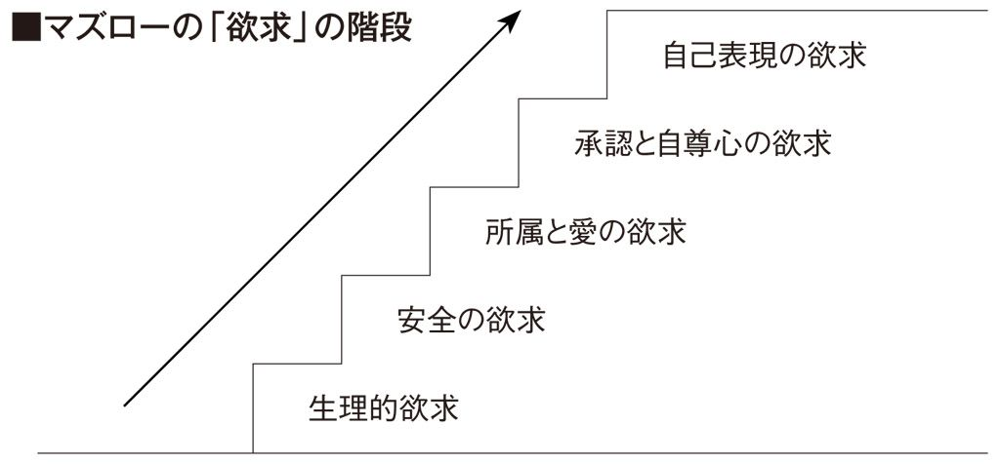

| 成功したい女は、「結婚」を捨てなさい | |
| 笠井裕予 | |
| (2013) | |
成功したい女は、「結婚」を捨てなさい
借金５０００万円からの「私の５年闘争」
女性の「人生計画」アドバイザー
ファイナンシャル・プランナー
笠井裕予
翼を持たずに生まれてきたのなら、
翼を生やすために、
どんな障害も乗り越えなさい。
────ココ・シャネル
「成功したいなら、結婚を捨てなさい」
たいそう激しいことを言っていますが、これはあるとき、私が、ほかならぬ私自身に向かって、厳しく宣告した言葉なのです。
私は二〇、三〇代のころ、自分にはもっと何かできるはず、と思っていました。
学生時代、友だちと話をしていた将来の進路も、夢も、
「やりたいことをやりたい」
「好きな道で生きていきたい」
と、そんな話ばかりでした。それが若さであり、将来のある人間、可能性を信じる人間として当然の選択だと、疑いもしませんでした。
しかし、私の場合、そうした「安易な道」を選んで生きてきた結果が、五千万円の借金という、暗い落とし穴への転落だったのです。
この落とし穴から、とりあえず地上に引き上げてくれたメンターは、地上に住む条件として、私から「安易」「自由」「休息」といった、甘味の強い世界をことごとく遮断しました。
代わりに、理不尽な世界に住むよう強制しました。
「やりたい」ではなく「やるしかない」へ。
「一本の狭い道だけを歩け」と命令したのです。
その道の淵から足をはずせば、深い穴に落ちるでしょう。だから、私にはその道を必死に歩くしか、選択はありませんでした。
「やりたい」世界は、究極の欲求であり、自己実現の世界。
だから、ステップを一歩ずつ踏んで進まなくてはならない。
決して、一足飛びに「やりたい」世界へは到達しない。
メンターは、厳しい強制の中で教えてくれたのです。
メンターの強制は、Ａ・マズローの「欲求の五段階」に則したものであることをのちに教えられました。
私が結婚を捨てたのは、その極限の状況の中で、です。
ある時期までは、追い詰められた生活の中でも、
「いつかは結婚して、女の幸せを得たい」
ふとした折に、心にその思いがかすめたのも事実でした。
しかし、東日本大震災後のあるとき、自分がいかに人生を、そして仕事を甘く考えていたかを突き付けられ、愕然として、
「あれもこれもはダメ。結婚は捨てよう。私は仕事の成功を取ろう」
自身に宣告したのです。
現在、この道を脇目も振らずに駆け抜けてきて、しみじみ感じるのは、
「これで、よかった」
その思いです。
ようやくいま、自分の居場所を、マネー・セミナーの講師というポジションに見つけられた気がしているのは、結婚願望を捨てて仕事で一人前になる道を取った、その結果なのですから。
何も、結婚を永遠に捨てる必要はないとは思いますが、本気で人生と向き合うために、「捨てる」覚悟も必要なときがあると思うのです。
一度きりの人生、五年でも一〇年でも真剣に向き合って、自分本来の能力を発揮するために、結婚でなくてもいい、何か大事なものを「捨てる時期」を持つことが、自分らしい人生を送る土台になると、いまはそう思います。
どんなことであっても、ステップを一つずつ上がって行かなくてはならない、というマズローの教えは、
「人生、あわてる必要は、まったくない」
ということも、同時に、私に気づかせてくれました。
結婚でも仕事でも、本当に長期的な視野で眺めて、着実に階段を上っていけばいいのです。
五年間、私は一歩一歩、歩いてきました。
そうして、自信というものも、確実に心の底にわいてきています。
たった五年で、ここまで変われるものだったのか、と少し不思議です。
だったら、もっと早く「やりたい」ではなく「やるしかない」世界で、汗を流すべきだったな、という思いも浮かぶほどです。
私の愚かな半生から、覚悟を決めることの大切さをつかみ取ってくだされば、心から嬉しいと思います。
二〇一三年一一月吉日
笠井裕予
装幀 岡 孝治
写真 清水隆行
編集協力 エディット・セブン
なぜ、結婚を捨てる必要があるのか
────人生、あせらなくていい
自由に生きた代償は、とてつもなく大きい
────私は、無知だった
人を変えるのは人。メンターとの出会い
────私の人生を変えた「強制力」
女が女を捨てるとき
────仕事か結婚か、人生の覚悟
お金のため、結婚のためには生きない
────一〇〇歳になっても働いていたい
成功の道筋が見えた
「環境」には、どこまでも人を変える力がある、しみじみそう思います。
私はいま、マネー・セミナーの講師を中心に、ファイナンシャル・プランナー（ＦＰ）として活動しています。講師の経験はすでに三年を過ぎ、セミナー後のお客様との個別相談会も年に三〇〇回ほど行っております。
まだまだ至らない点が多々あり、今後も大いに勉強を続けていかなくてはなりませんが、やりがいを持って一所懸命に取り組んでいます。
そんな私は、もともとＦＰという仕事自体、好きではありませんでした。
というよりも、あまりにも縁遠い世界でした。
女の通弊として、あの無機質な数字が紙の上に並んでいるのを見るだけで、頭が痛くなってしまうほど、大の数字嫌いだったからです。
ですから二〇代で最初に就職した会社を辞め、さまざまな資格の取得に励んだときにも（結局のところ、まったくモノになりませんでしたが）、数字にかかわる分野は毛嫌いして、意識的に避けてきました。
そんな私も、いまの会社で厳しいトレーニングを受けて変わりました。
詳しい経緯は第２章、第３章でお話ししますが、問答無用の命令を受けて経営者の保険証券を整理したり、企業のバランスシートをチェックしたりするなど、数字と格闘していくうちに、見るべき要点やポイントがわかってきました。
複雑な保険商品なども（保険会社の担当者を大いに煩わせたことは事実ですが）、場数を踏み、お客様との折衝を通じて出てきた疑問点を一つ一つつぶしていく。そういうプロセスを通じて、知識を深めることができました。
まぎれもなく「環境」が、私を育ててくれたのです。ＦＰ三級で三度も試験に落ちた私も、二級の試験は一発合格できました。
さらに、女性のお客様を対象にセミナー講師を務めるようになってからは、より、この仕事にやりがいを感じるようになりました。というより、いまではこの仕事を「天職」と思っていますし、一〇〇歳まで続けたいとさえ思っています。
第１章で述べるような、めちゃくちゃな生き方をして、五千万円もの大借金を抱えた私だからこそ、その経験を生かしたい。ある意味では、この仕事に使命感さえ感じているのです。
自分が進むべき道が見えてきた──。
やっとそう思える地点まで、たどり着けたかなと感じています。
セミナーでは、私の経歴も包み隠さず、正直にお話しすることにしています。
大きな借金を抱えたことも、すべて開け広げにしています。死んでもおかしくない状況だったこともお伝えします。
そのように正直に話すほうが、伝える言葉にも説得力が出るでしょうし、聞いてくださる方々に、より親近感を感じてもらえるように思うからです。
女性は一般的に、私と同様、お金や数字に強くありません。そんな彼女たちにとって、マネー・セミナーに参加すること自体、かなりのハードルに違いありません。
「きっと難しい話をするはず」
「私に理解できるだろうか」
このような不安を感じる方も少なくないでしょう。
だからこそ、講師の私自身が、お金に苦労したと打ち明ける効果は、決して小さくないと思っています。
「このセミナー講師も、お金で失敗したんだ。だったら、私の不安もわかってもらえるかもしれない」
と身近な存在として、受け止めてもらえるのではないかと思うのです。
借金の話をすると、皆さん、一様に驚かれます。
実際、それだけの借金をした人など周囲にはいないでしょうから、ことのほかインパクトが大きいのでしょう。
さらに、そんな重大なことを話す割には、自分で言うのもなんですが、私は非常におっとりとした（テキパキしていない）キャラクターで、朗らかに淡々と話す（少し抜けているのかもしれません）ものですから、なおさらそのギャップの大きさに面白みを感じていただいているようです。
女性の「無計画性」
セミナーで自己紹介が終わると、具体的な内容に入っていきます。
現実の日本経済や現在の時代性、老後の生活費など、具体的数値も要所、要所で示しながら「お金の殖やし方」「お金の守り方」「具体的な貯蓄術」について紹介していくのですが、私がセミナーで最も強調すること、それは人生計画を立てることの重要性です。
私が大きな借金を抱えてしまった原因は、何の計画性もなく、感覚や感情のおもむくままに人生を歩んでしまったからでした。ですから、その反省に立って、戦略的に人生を歩みましょう。そのようにお話ししています。
人生計画というと、少々堅苦しく聞こえるかもしれませんが、まずはこれから先の人生を自分自身でイメージしてみること。そこから始めてみませんかというご提案です。八〇歳のとき、どんな自分でいたいのか。老後の姿をイメージするのが難しければ、せめて一年後、三年後、一〇年後の自分をイメージしてみる。
いまよりも豊かになっていたい、もっと仕事ができるようになっていたい、綺麗になっていたいなど、さまざまな理想像が浮かんでくることでしょう。
要は、そうした理想像をもとに、自分の想いに叶う人生を自らがデザインすること。こうした姿勢が大切なのだと主張しているのです。
実際、自立している素敵な女性というのは、他人が見てもワクワクするほどの人生計画を立てているものです。私は仕事柄、多くの女性経営者にお会いするのですが、実績を残されている方ほど、自分の一生を明確にイメージされています。
「自分の人生は、自分で決める」
強い当事者意識と覚悟を持って、自分らしい人生シナリオをつくられている。それが成功の秘訣の一つではないかとも思っています。
実は、私がこの仕事に最もやりがいを感じているのは、お客さんの人生計画のお手伝いができるから、というのも理由の一つです。
セミナーでは、三〇名から五〇名を超える参加者を、相手にしなければいけません。ですから、参加される方一人ひとりとコミュニケーションの時間をとることは困難ですが、その後の希望者による「個別相談」では、一対一で面談させていただきます。規定の時間は一時間半と決まっているのですが、時間をオーバーしてしまうこともしばしばです。
初めの個別相談では、主に二つのことをお聞きします。
一つ目は、家族構成や収入、子育ての有無など、相談者の「現状」です。
それに加えて二つ目は、将来の夢や希望、さらにはお金の面で気にかかることなど、相談者の「関心事」もお聞きします。
それらを具体的に把握したうえで、単にお金や保険の知識を提供するだけではなく、どういう人生を歩みたいか、共に考えるというスタンスで臨ませていただいています。
実は私は、相談者の人生計画についてお聞きするのが大好きなのです。
相談者の中でふくらむ、輝かしい夢や希望に接すると、ぜひそれを共有したい。実現できるようにサポートしたいという気持ちがわき出てきますし、将来への不安があれば、それを解決する手段を見つけたいと強く思います。
「長期的な生き方」が大事
最近、個別相談をしていて、特に目立つのが人生に迷われている方の存在です。
挑戦意欲があるにもかかわらず、やりたいことや生きがいがなかなか見つからずに、「自分探し」の迷宮に迷い込まれている。そんな方が、実に多いのです。
さまざまなセミナーに参加したり、資格を取得したりと、人一倍動き回るのですが、どれもモノにならず中途半端。まさに過去の私のような状態です。
「仕事への意識が低い」
「人生に対する態度が甘い」
と切って捨てることもできるのでしょうが、その方々の苦しみや焦りが理解できる私には、それができません。
どう自分の価値を自ら見出してもらうか。ここに焦点を当てて、差し出がましくない程度に、自分の経験や苦労話をお話ししながらアドバイスします。そして、新たな人生計画づくりのお手伝いをさせていただいています。
いずれにせよ、私のように、お金で苦労する女性をつくりたくないというのが、私の原動力になっています。
セミナーでは人生計画の重要性を強調した後、具体的にマネー・プランの考え方に話は映るのですが、ここでも、私が語ることは至ってシンプルです。
お金の問題も人生計画と同様、長期的な視野で考えましょう。これに尽きます。人生は十分に長いのですから、あわてることはありません。
私も、結婚を捨てる覚悟まで持って、やっとここまで成長できたように、人間は一足飛びに成長できるものではありません。悩んだり、つまずいたりしながら、一歩一歩成長していくのがふつうで、どうしても時間がかかるものなのです。
お金も同じです。一夜のうちに、手持ちのお金が何倍にもなるという、夢のような話はありません。もしあるとしたら、それは極端なほどの「ハイリスク・ハイリターン」の商品ですから、近づかないほうが無難です。
人生の目標に向かって、堅実に、着実に歩みを進めるためには、時間を味方につけながら、長期的かつ戦略的に臨むことが必要なのだと、お話ししています。
現在の私の仕事であるマネー・セミナーでの講師の話を、やや詳しく紹介させていただきました。初めから最後まで人生とお金についての話題ですが、大切なテーマですので多くの女性のお客様と、ひざを突き合わせて語り合っています。
さて、私の半生の、二〇代から三〇代もお金を中心にして回っていました。そして落ち着きのない生活の果てに、三〇代の半ばで巨額の借金をつくったとき、私は破滅の淵に立っていました。
そのどうしようもない状況から、メンターである『年収１億円思考』（経済界）の著者、江上治（株式会社オフィシャル代表）が、どのようにして私を救い上げ、一人前に生きていく仕事人として鍛え直したか、Ａ・マズローの理論とも併せて、それをお伝えしたいと思います。
また、なぜ「結婚」を捨てたのか、そのわけも......。それも、本書でお伝えしたい大切なテーマの一つです。
とにかく、次の章からその顛末をお読みいただきたいのですが、冒頭は本当に恥ずかしい場面からご覧に入れなくてはいけません。でも、もちろんそれを避けるわけにはいきません。
最後に第４章で、もう一度、「現在の私」とお会いしてくだされば幸いです。
女、三六歳、借金五千万円
何度見ても同じです。
そこには、動かしようのない数字が、冷たく横たわっています。
合計額五千三百七十五万円。
数字は、私がボールペンでメモ用紙に書き込んだもので、わずかな間に〝借りた〟ことになっているお金でした。三一〇〇、一四〇〇、八七五を足した数字を、私は放心して眺めました。
それが一切合財、この世から消えてしまったのです。
なぜ消えたのか？
もちろん、私が豪遊して使い尽くしたわけではありません。いっそ遊びの限りを尽くして使い切っていたのなら、まだ、納得できたかもしれません。
しかし、現実はまったくの逆。私はただ借りただけで、そのお金は私を通過し、「投資」という甘い名目でほかの人の手に渡ったきりだったのです。
私の手元に残ったのは、借用書が数枚。
「なんてバカなんだろう、私って」
「この先、どうなってしまうんだろう？」
胸に浮かぶ呟きと言えば、そんな愚かな愚痴の堂々巡りばかり。
二〇〇七年、三六歳の、その年も暮れようとしているころで、私はぼんやりとその借用書と五千三百七十五万円と自ら書いた紙を握るしかありませんでした。
女の三六歳と言えば、既婚未婚にかかわらず世の中を十分に知って、貫録さえ感じさせる年頃でしょう。
子どもがいればたいていは小学生、結婚の早い人ならもう中学生になっていて、子どもたちの進路に頭を痛めている幸せな母親です。キャリアウーマンなら、ビジネス社会で押しも押されもしない実績を残しているはず。役職者になっている人もたくさんいることでしょう。
その三六歳の年の暮れに、私は狭いアパートの一室で借用書を握りしめながら、とほうもない額の金額を眺めながら呆然としていたのです。
もう、何も考えられない状況でした。
私が生まれたのは、一九七一年（昭和四六年）です。
広島市の県営住宅に両親は住んでいて、父は鉄工所に、母も市内の会社に勤めに出ていました。
お金持ちの家庭ではありませんでしたが、毎日の生活に困るような暮らしでもなく、のちに三つ下の妹が生まれましたが、どこにでもある、平和で、のどかな庶民の家だったと思います。
いま思い返せば、ある時期まで私は、なんの変哲もない、ごく当たり前の道を歩んでいました。しかし、あるときまったく些細なきっかけで、曲がってはいけない角をふっと曲がり、入ってはいけない横道に入り込んでしまったのです。
しかもその道を、自分では、いままでどおりのふつうの歩み、ふつうの道だと考えていたのです。
歩みたくない！
父親は瀬戸内海の小さな島の出身で、おだやかな性格の人でした。いつも笑っている表情しか記憶にありません。怒られたことと言えば、小学校四年生のときにお風呂場で、よほど私が聞き分けがないことをしたに違いありません、びしっと平手打ちを食らいました。
きわめて珍しい出来事なので、このことはよく覚えていますが、でも後にも先にも怒られたのはこのときだけです。いまに至るまで、父の表情はいつも笑みの絶えない印象、というよりそういう優しい顔なのです。
これに対して、口うるさかったのは母でした。何かにつけて小言を言われ、お菓子なども買ってもらった記憶もなく、出不精でしたから一緒に遊びに行くとか、買い物に出かけるというようなことはありませんでした。
休日も、遊びに連れて行ってくれることが、いっさい、ない母親でした。
遊園地にすら、記憶にあるのは、妹が生まれるときに、一回一緒に行っただけです。新幹線に乗って東京に行く、などということは（親戚が東京にあったのに）結局、一度も経験しませんでした。
ところが、成人してから知ったのですが、この両親、実は家の顔と外の顔が真逆だったのです。おだやかで優しい父親は、職場の鉄工所に行くと非常に厳しい職工さんに変身して、後輩たちをビシバシと鍛えていたと聞きましたし、家では文句ばかり言う母親は職場に行くとすごくいい人に変身して、あるときなど、
「笠井さんのお母さんみたいな人、いいな。うらやましいな」
職場の若い女性から言われて、妹と一緒に驚いたこともありました。人間なんて目の前だけのイメージだけで判断できないんだな、と強く思ったものです。
そんな母でしたが、三一歳のとき初期の子宮がんが発見され、手術しました。私は小学校二年生でした。この手術以来、一〇年あまりの期間、母は仕事を休むことになります。その後、現在に至るまで職場には復帰するのですが。
女性は同性である母親を、ちょっと複雑な気持ちで見ているものですが、母と実家の弟（つまり叔父さん）や姉（伯母さん）との比較で、
「母だけが貧乏くじを引いているな」
と私は感じていました。そもそもお金持ちの家だったようですが、母の姉も弟もお金をかけて勉強をさせてもらい、現在も悠々自適の老後を過ごしたり、会社を経営したりして裕福な生活をしています。でも、母だけはなぜか学校も転校が多いし、高校も商業高校の夜間に行っているのです。しかも、学校を出てからはずっと働いて、父と結婚した後も共働きです。
なんだか恵まれていないなあ、ついていない人生だなあ、といつも母のことを見ていたものです。外に出るのが嫌いというのも、積極的に人と交わりたくない性格からのことかもしれません。マイナス思考だな、お母さんは、と中学や高校のころは思っていました。私が社会人になって、あちこち行きたい、と動き回るようになったのは、こうした母の存在の反動だったかもしれません。
その母もがんの手術をしてしばらくは働けない状態が続いていましたが、職場に復帰してからは元気になりました。いまは六〇代半ばですが、どんどん元気になっているような気がします。
容赦なく捨てられる
幼いころの私はおとなしく、どちらかというと神経質な子どもだったようです。ただ、人の好き嫌いが強くて、学校の先生が好きだと活発に行動して勉強もし、嫌いだと引っ込み思案で、借りてきたネコ状態になりました。
いつもいつも、学校の先生が自分に目をかけてくれるかどうか、気にしていた記憶があります。先生が認めてくれているか、気になって仕方がなかったということでしょうか。
また環境が少しでも変わると、それになじむのに時間がかかる子でした。時間がかかると言えば、何ごともスローな人間だったようです。大器晩成と言えば聞こえはいいのですが、要はのろま。勉強でも、人の三倍くらいの時間をかけないと理解もできない、暗記もできない、そういうタイプでした。
地元の短大に進んでからは、アルバイトに明け暮れました。ホテルのコンパニオンで、ロングドレスを着て、飲み物を運ぶバイトもしましたが、周りがテキパキと働く人たちばかりで、圧倒されたものです。私はテキパキと機敏に動く人からは、何か怖いものを感じるのです。
そのうちにいちばん仲のいい友だちから誘われて、Ａという有名なレストランでバイトをすることになりました。ここは女性が少なく、男性がよく働いてくれて、楽しいバイト先になりました。
このＡレストランで、私は真剣な恋をしました。それまであまり男性と付き合ったことがありません。あまり男性に、強い関心を向けるタイプではなかったのかもしれませんが、ここでの恋はまじめでした。一歳年上で、地元の大学に通う学生でした。ほとんど毎日のようにデートをしていて、
「この人といつまでも一緒にいたい」
と思いを強くしたものです。周囲の仲間にも知られた仲で、三年間ほどお付き合いしました。ということは、一八歳からですから、短大を卒業してＯＬになって一年間はお付き合いしたことになります。
ところが、この恋は私にとって惨めな結果に終わります。
私は彼より先にＡレストランのバイトを辞めて就職するわけですが、彼はそのままそこで働いていました。そうして、私がいなくなった間に、バイトの後輩の女性と付き合いだして、結局、私はフラれるという結末になったのです。
とても好きだった人だけに、このときはとてもショックでした。けれど冷静に考えてみれば、彼にとって私は「必要のない存在」となったのでしょう。
彼と後輩のその後は知りません。そのとき一緒に働いていた人たちとは、いまでも親しくさせてもらっているのですが、彼らについての消息は、お互い、あえて触れないようにしています。なんとなくの雰囲気から察すると、二人はその後どうやら結婚しているようですけれど。
あれ以来、恋愛というモノから、すっかり縁遠くなってしまいました。短大時代に、その彼氏を含めて広島大学の人たちとキャンプに行ったり飲みに行ったりして、あのころがいちばんの「モテ期」と言っていいのでしょうが、私は彼に夢中でしたから、ほかの人は目に入りませんでした。
あとから考えてみれば、ちょっと惜しかったな、という気がします。もし彼と付き合っていなかったら、「結婚」をもっと戦略的に考えて、ほかの大学生たちと付き合っていたに違いありません。
たまたま当時の私は大好きになった人が現れて、戦略も何も考えることなく、夢中で付き合っていた、という状況です。もっと端的に言うならば結婚を「理性」「戦略」で考える以前に、恋に陥ったまま「成り行き」「情緒」に流されるままだったということでしょう。
どうも、いろいろな人と話をしてみると、男性の職業や年収にかかわらず、
「私を好きになってくれる、優しい人なら、だれでもいい」
と「成り行き」「情緒」に任せている私のようなタイプは、なかなか結婚できないようです。「結婚」が女性にとって一つの事業であるなら、私も周囲にいる広島大学の学生たちの中で、だれがいい会社に就職できそうか、だれが最も出世しそうか、よく観察して、「理性」「戦略」で迫っていくべきでした。
みんな一流企業に就職していきましたから、惜しいチャンスを逃したものです。
......というのは、もちろん冗談で、結婚は捨てた（？）四二歳のいま、目いっぱい強がっているだけですが。
やりたいことがあるはず！
短大を卒業して就職したのは、地元の機械工具の卸売会社でした。社屋は建てたばかりの自社ビルで、待遇も悪くはありませんでした。社員は四〇名ほど。女性社員はほとんどが同じ短大でしたから、気心が知れて、みんな仲良しでした。
特に先輩からは可愛がられました。私はどうやら、同性の先輩に気に入られるタイプのようです。高校時代にも男子バスケットボール部のマネージャーをしたのですが、一年先輩の女子マネージャーにとてもよくしてもらったものです。
ですから、会社勤めの居心地は、先輩や同僚とのお付き合いという面では、決して悪いものではありませんでした。
でも私は、すぐに「辞めたい」と思ったのです。
その原因は、創業オーナー社長と肌が合わなかったからです。
私は小学生のころから、相手が自分に関心があるかどうかに強い思いを向けていました。特に先生が、ひいきしてくれるかどうかは最大の関心事で、それによって活発になったり、おとなしくなったりしてしまう子でしたが、ＯＬになってからは「先生」が「社長」になったのです。
つまり、そういう力を持った人と自分との関係を、常にはかる傾向があったと言っていいでしょう。あまり褒められた気持ちの傾向とは言えないでしょうが、こうした気持ちの持ち方はだれにもあると思います。私は多少、その傾向が強く表れる人間だったと言えるかもしれません。
その創業社長は、なぜか（私の見るところ）、血液型のＡＢ型女性を可愛がる人でした。奥さまがＡＢ型だからという噂も聞きましたが、ＡＢ型の女性に声をかけたり指示する際の態度は、優しく丁寧で、笑顔いっぱいなのですが、別の血液型、私のようなＡ型に対しては、無愛想で命令口調になるのです。
私はそういうことには敏感ですから、入社してすぐに、
「あ、この会社は肌が合わない。これはムリかも」
直感してしまいました。不幸な直感と言えば言えるでしょう。そのせいかどうかはわかりませんが、入社半年でアトピーがひどくなりました。
事務職という仕事も合わず、それでも、石の上にも三年ということわざを思い出して、三年は我慢しようと思いました。二階に直販の店舗が設けられていて、私たち事務の人間も、ときどき手伝いで店頭に立ちました。これが楽しみだったのは、もともと華やかな接客が向いている性格だったのかもしれません。
私にとって幸いなことには、東京に出て修行していた社長の息子が専務だったことです。その専務は私に目をかけてくれて、
「いまの広島は慣れていないから、おいしい店を教えてくれよ」
と言い、私はずいぶんあちこちのお店に案内したものでした。
しかし、専務が社長になる前に、結局、私はその会社を辞めました。在職五年半でした。退職後もその専務とはときどき食事を一緒にしましたが、現在は社長になって活躍されているようです。肌の合わない社長が会長になり、専務がやがて社長になるのですから、もっと勤めてもよかったのですが、
「何か、もっと、自分のやりたいことがあるはず......」
という思いを、このときの私は抑えることができなかったのです。
果てにあるもの
何か、もっと、やりたいこと、やりがいのあることがあるはず......。実は、機械工具の卸売会社のＯＬ時代に、会社の事務が面白くなかったこともあって、私はその思いを強く抱きながら働いていたのです。
会社の仕事が、ヒマだったせいもあるかもしれません。
私たち事務職は五時の定時退社、営業部門でも六時には帰宅していました。仕事がハードではなく、待遇もよく、誕生日にはお小遣いがもらえるような家族的な会社でしたから、社内結婚も盛んでした。私の同期も、後輩も、次々と相手を見つけて寿退社していきました。もっとも、恋人を後輩に取られた後遺症があったのかもしれませんが、私には、結婚の二文字は無縁のものと思っていました。
それよりも、仕事がしたい。いや、仕事でなくてもいいから忙しくしたいと、そのころ思っていたものです。五時に退社してから、知り合いの居酒屋でバイトをしたこともありましたが、有り余る時間の消費に戸惑っていたのでしょう。
時間の消費の一つに習い事がありました。会社の先輩が、インテリアコーディネーターの勉強をして、退職してから、本格的にその資格を活かして仕事をしていました。うらやましかったので、私も勤めながらフラワーコーディネーターやカラーコーディネーターの勉強などをしていたのです。
やりたいこと、自分に合った仕事があるはず。それを見つけたい、と強く思いました。が、同時にそれは、五年半という長い期間、無味乾燥な仕事をしがらも勤めた会社を、格好良く辞める口実でもあったと思います。
たとえ口実であったとしても、「何か、あるに決まっている」と思い込んでいた私は、退職してすぐに「やりたいこと探し」に出かけました。
先輩が成功したインテリアコーディネーターに早速挑戦しました。先輩はセンスのいい人だったのでうまくいったのですが、勉強していくうちに私には無理だろうとわかって、これは資格を取るまでには至りませんでした。
次に照明コーディネーターにチャレンジしました。その次は、パソコンのマックを購入し、ＤＴＰ（パソコン一つあれば原稿作成から編集、レイアウト、製版、コピーがすべて行えるシステム）を勉強しました。最後は、手に職をつけたいと考えて、お花屋さんに就職したいと考えたのですが、未経験だからという理由で採用してもらえませんでした。
数百万円を投じたにもかかわらず、たった一つの資格も取れず、技術も身に付きませんでした。つまり、どれもモノにならなかったのです。
全部モノにならず未消化だったからこそ、私の心の中には不満が残りました。人間、一所懸命に取り組んだことに対してはこだわりを持ちます。
「あれもこれも失敗したけど、何か、私には別の適性があるに違いない」
むしろ、その思いを、強く胸の奥に仕舞い込むものです。
翌年、生活のためもあって一級建築士事務所にバイトで入り、雑務のかたわら、ＣＡＤを勉強しました。むろん、それで設計がわかるわけもありません。
そして、そのあくる年、短大時代にバイト先で知り合った友人の紹介で、市内の小さな商社に就職したのです。しかし、この会社は営業が主体でした。未経験者の私は、すぐに落ちこぼれの仲間入りをしてしまいました。
の落とし穴
そんな落ちこぼれの一人が、運命の日を迎えます。
さりげなく訪れた日でしたが、そのときの私は、
「これでうまく売り上げを上げて、社長に認めてもらおう」
強い「承認」の欲求に、心が突き動かされていたのかもしれません。
もちろん、会社に勤めている人間なら、成果を上げよう、認められようという功名心はむしろ必要です。成功させれば会社の業績が上がるわけですから、この欲望はなくてはならないことと言ってもいいでしょう。
ただ功名心に、はやったときには心が高ぶるものです。それだけに、えてして人間は前のめりになり、冷静さを失い、目が曇ってしまいがちです。注意しなくてはならないのは、まさにこのときです。
私ももっと冷静に、さまざまな状況を考えるべきでした。
でも、その話を持ってきたのは、妹の友だちのＫさんでした。一緒に何度か食事をしたことがあり、気心の知れた仲だっただけに、話を聞いたとき、
「ありがたい話だわ。社長もきっと喜ぶ」
すっかり気乗りして、警戒心などこれっぽっちもわかなかったのです。
彼女から電話がかかってきて喫茶店で会い、そこで彼女が言ったのは、
「ただ（無料）で、商品の宣伝ができる仕組みがある」
というものでした。
そのころ、会社ではオリジナルの健康食品を開発し、全社を挙げて「これを売りまくろう」と気勢を上げ、卸の会社に営業をしており、妹にも、友人にもその食品のことを宣伝している最中でした。彼女にも当然、その話をしていました。
無料で、その健康食品の宣伝をしてもらえるなら、こんなありがたい話はありません。社長に褒められるかもしれない......。詳しく仕組みを聞くと、その会社では商品カタログをつくり、全国規模で配布しているということでした。
「すごい考えなんです。一千万人の大きな会員マーケットをつくって、いずれはいまの生協（生活協同組合）にとって代わる力をつけると言っているんです」
Ｋさんの取り出した分厚い商品カタログをぱらぱら見ると、日用品から飲料、衣料、健康機械など、まさにゆりかごからお墓までのあらゆる商品があふれています。ちょうど、通信販売のカタログと同じような体裁と言えばいいでしょう。
その商品カタログにうちの会社の健康食品を掲載でき、宣伝できるのだというのです。しかも、無料で。もしこれができるなら、私の会社で開発した健康食品は、一躍、全国を相手にした商品となります。
（すばらしい）と思いました。私の顔色を見ながら、彼女は、
「この会社の代理店になるだけなんです。フランチャイズというんですけど、登録するだけで、いいんです」
登録料は四〇万円と言いました。少し高いけど、会社なら宣伝費として考えれば、安いものだろうと考えました。
この話は、すぐに会社に持ち帰り、社長に伝えました。
しかし、話を聞いた社長は、すぐに答えました。
「それはやらなくても、いいよ。四〇万は高い」
この世にあるのか
社長はまったくその話に興味のない表情で言いました。四〇万円の登録料を高いというのが理由でした。
この結論をＫさんに告げると、この会社の説明会があるので、行ってみないかと誘われました。
説明会は市内の区民センターなどで行われるというのです。時間は有り余っていましたから、私は誘われるままに出席してみました。
説明会の会場には十数人の聴衆が来ていました。その聴衆を前に、立派そうな人が壇の上に立ち、この会社の概要や、将来の構想は生協を超えるという、これまでＫさんから聞いたような話をしました。
終わってから個別の相談会が開かれ、私はそちらに連れて行かれました。
中年の女性が私の前に座り、Ｋさんがこれまでの経緯を簡単に紹介しました。女性は、会社がそういうことなら、あなたが個人で代理店に登録しませんか、と言うのです。
「四〇万円の登録料はかかりますけど」
彼女は言いました。でも、当座、四〇万円はかかるけれど、「すぐに取り返せますよ」と、もう少し深い仕組みを教えてくれたのです。
仕組みは簡単でした。私が代理店登録をしたあと、別のだれかを勧誘して代理店登録させれば、紹介手数料が私に入ってくるというのです。
「とりあえず、二人くらい勧誘して登録してもらえば、あっという間に、もとは取れますよ」
彼女はそう言いました。二人が代理店契約し、その二人が同じように友人や親せきを勧誘して代理店に登録させ、その友人や親せきがさらに別の人を勧誘して...と無限に広がっていけば、その都度、私のもとに紹介手数料が入る仕組みなのだと説明を受けました。
世間知らずにもほどがある話なのですが、このときの私は、
「へえ......、でもそんなにうまくいくかなあ」
と思ったくらいで、それ以上の不審は抱きませんでした。しかも、四〇万円はローンを組んでくれるというし、
「みんなの生活をよくするために、流通革命を起こすんです」
「生協を上回る、大きな組織に、すぐになりますよ」
彼女がとつとつと訴える、その会社のビジョンにも、何とはなしに魅力を感じました。
会社のパンフレットを見ると、会社は新幹線の新横浜駅の近くにあり、堂々とした五階建てのビルが写っています。私は、壮大なビジョンを掲げる、しっかりした会社だというイメージを持ちました。
また、私が登録することで、会社の商品も「タダで」「宣伝できる」のです。
この日、彼女の勧めるとおりに、個人の資格で代理店登録をしました。
ちょっとした副業感覚だったのです。ちなみに、会社の健康食品についても、のちに「広告を載せてもいいですか」と社長に尋ねると、「無料なら、好きにしていいよ」ということでしたから、載せたものです。
代理店になってから、思いがけず、忙しい日々が始まりました。
単純な私は紹介手数料が入るということよりも、「消費者を守るために、より良い商品をより安く、提供したい。そのために流通革命を起こす」というビジョンの壮大さに打たれたようなところがあります。
登録してすぐに、友人を呼びだして、
「代理店になろうよ。自分の生活を守るためだよ」
熱心に説得を始めたときには、あまり、紹介手数料という考えは頭にありませんでした。しかしそれが結果的に幸いしたのかもしれません。数か月のうちに、一人入り、また一人が登録し、となって、またたく間に最初に支払った四〇万円のもとが取れるまでになったのです。
ビギナーズラックと言っていいのかもしれませんが、こうしたことが、私の中に眠っていた金銭欲を目覚めさせることになったと言えるかもしれません。しかもお金になるだけでなく、自分たちの生活をよくするお手伝いができるのです。
半年もたたないうちに、すっかり私はこの「代理店勧誘」のネットワークづくりに嵌まっていたのでした。
信者はもっと盲目
このネットワークビジネスには、壮大なビジョンとともに〝自己啓発〟が強調される側面もありました。すなわち自分を高めていくことによって、お金持ちになれる。目標をしっかりと持って意識を変えるようにすれば、潜在能力が表に出てすごいパワーとなり、お金が儲けられるというのです。こうした話は、説明会のあとで催される研修会の席上、幹部の人たちが講義しました。
「そうかあ、自分は変えられるんだ、お金持ちになれるんだ、すごいな」
単純に私は感心していました。これが、自分の求めていた世界かもしれないとさえ思いました。彼らの言葉や主張は、砂に水が吸い込まれるように何の抵抗もなく吸収され、もっともっと、多くの人にこの会社のことを、この事業を伝えなくてはならないと、本気で思い込むようになっていたのです。
ときには、ホテルの大宴会場などを借り切って千人以上も集められ、その群衆の前で成績優秀者が呼び出されて表彰される、というような大きなイベントも行われました。私は熱気でむんむんするその場に参加できるだけでうれしくなり、誇らしい気持ちにまでなっていたのです。
急速にネットワークの活動に入り込む動機の中で、特に私を楽しい気分にさせたのは、グループでの活動があったことでした。説明会や研修会に出るうちに顔見知りになった人々と、なんとなく連絡し合うようになり、そのうちに、定期的に夕方からファミレスで待ち合わせるようになったのです。
メンバーは中年の営業マン、かなり年配の食品店の経営者、フリーターみたいな若者など四、五人で、ＯＬは私以外はいませんでした。ときには彼らの連れてきた人に代理店登録を勧めたり、この代理店システムがどうしたらもっと広まるかを話し合ったりしました。
また、メンバーで手分けをして、会社や個人のお宅にファックスＤＭを送るというような、営業活動も行いました。なんだか高校や短大の部活のノリでした。何か社会で特別なことをしている、という気持ちになりました。
こうした日々が続いて一年がたち、私はいつの間にか会社を辞めていました。当時の給料は一五万円くらいで、私一人が生活するには（二四歳のころから、私は実家を離れ、一人暮らしをしていました）十分すぎるほどでした。
その給料のない生活をするのは、確かに不安でしたが、このころの私は、初めて味わう「生協を超える流通網をつくるという使命感のある事業」「自分の仲間をつくる生活」に充実感と楽しさを覚え、
「なんとかなるだろう」
と、ネットワーク専業に踏み切ったのでした。
思えばたいへんな冒険をしたものですが、渦中にあると何もモノが見えません。まして、ネットワークの幹部からすると、この仕事一本で駆け回る人が多ければ多いほど、会社が儲かる仕組みですから、私の「英断」は大歓迎されました。
私には、広島支部から声がかかり、説明会の司会や受付を頼まれたりしました。私はそれらの依頼にはいっさい断ることをせず、喜んで引き受けました。
しかし、電車代、車のガソリン代から宿泊代などは、すべてが自腹です。これは経済的にすごく痛いことでした。多少の蓄えがありましたが、ネットワークからの収入で足りないところはそれを充当させるしかありません。
ネットワークからの収入は、多いときには五〇万円くらいありました。でも、そんな高額なのはまれで、一〇万円いけばいいほう、低いときには数万円という月が続いていました。実家に近い場所に住んでいたので、ときどき、母や父にお願いして小銭を借りたりしてしのぐこともありました。
しかし一方で、妙なことに気づきました。こうして走り回っている中で、持病のアトピーがすっかり影を潜めていたのです。ＯＬ時代には、ずっとアトピーに悩んでいたのですが、ＯＬをやめた途端、その症状がぴたりとおさまってしまったのでした。
お金には窮屈になりましたが、それ以外のことは、すべてが楽しい。そのためだろうと考えました。
特に親が出不精だったものですから、小さいときから遠出をしたことがなく、近所で遊んでいるばかりでした。そういう人間でしたので、新幹線を使って大阪や福岡に出るときなど、ただただ楽しく、ワクワクして出かけていました。
大やけどを負う
さて、こうしてネットワークに私が嬉々として嵌まっていった経過や動機を述べてきました。あまりに愚かな自分の過去なので、思い出すのも嫌なのですが、それにしてもなんと長い時間を、この妙な仕事（？）に注いできたことでしょう。会社を辞めてから三年以上も、私はこれ一筋に生きてきたのです。
「何か、思いっきり、やりたい」
ＯＬ生活を始めたころから、この思いをずっと抱きながら来た私ですが、あろうことかネットワークビジネスがその「思い切りやりたい」ことになって、魅入られたように嵌まり込んでいたのです。
しかし、この何ものも生み出すことのない、不毛な活動が、いつまでも続けられるわけがありません。振り返ってみれば、私がしていることと言えば、ひたすら新しい登録者（入会者）を増やすこと、それだけが目的の毎日でした。
せわしなく広島市内を走り回り、ときには大阪や神戸、福岡など県外にも出かけてイベントのお手伝いをし、ファミレスやホテルのロビーで新しいフランチャイズ候補者に〝おいしい話〟をして、日々が暮れていきます。
この活動専業は、広島ではほとんど私一人みたいな状況でしたから、会社の幹部にとってはとても貴重な存在だったようで、
「笠井さん、よくやってくれるね。ありがたいね」
イベントや集会では、ねぎらいの言葉をかけられたり、褒められたりしていました。この言葉や向けられる笑顔が、私にとっては無上の励みになっていました。
特にネットワークには私のような三〇歳前後の女性は少なく、ほとんどがおじさん、おばさんの年齢の人たちばかりでしたから、どこに出かけても注目され、かわいがられていました。気分の悪いはずがありません。
「私は認められている、喜ばれている」
その意識に酔ってもいたのです。
しかし、そうした生活の中で、経済生活だけは正直です。毎月、数万円の収入しかない日が続くと、いくら六畳一間で家賃三万五千円のアパートに住み、食費を切り詰めたとしても、かなりの額が不足します。
ネットワークの仲間たちには、見栄もあって、そんな苦しい状況を打ち明けてお金を借りるわけにいきません。親にも、そうたびたびは頼れない。やむを得ず、手を出したのがカードローンでした。
まだ多重債務の問題が世の中で騒がれていないころで、どの会社でも手続きが簡単、カード一枚を手に入れればいつでも問題なく借りることができました。
しかしいわゆる消費者金融からの借金は、一種の中毒にかかるようなものです。あまりに簡単に結構な金額を借りられるために、一度その味を覚えると、なかなかその状況から抜け出すことができないのです。
私も、「一度だけ」と思って、あるとき手持ちのクレジットカードで五万円を借り出し、その月の支出の手当てをしました。クレジットカードはそのころ五枚くらい持っていました。
しかし翌月には、やはり不足が出てしまいます。いくら考えてもそれに充てるお金の目処がたちません。結局、先月とは別のカード会社のカードで数万円を借り出しました。
機械の前でキーを打つだけの簡単な操作一つ。それで万札が五枚も六枚も姿を現し、それは私が自由に使っていいお金なのです。
私はそれを手にすると、再びネットワーク活動に奔走するために街に出ていく。そういう日々が続いたのでした。
しかし、借りたお金は、当然返さなくてはなりません。当時の貸出利率は高く、さすがにいつまでも借り続けてはいけないと考えていました。
とはいっても、余ったお金を返済に充てることができるわけもなく、別のカード会社から借りたお金を回す、といういちばんやってはいけない方法を取らざるを得なくなって、借金がどんどん増えていったのです。
「苦しいな。こんな状態は、続けられないな......」
あまりに遅すぎたと言うべきですが、ようやく私も、自分の置かれた状況を厳しく認識せざるを得なくなりました。
同時に、非常にゆっくりではありましたが、周囲の状況の変化に気づき始めてきました。それはネットワークの仲間たちの動きです。
小さなお金の亡者
もともと、登録をしてはみたものの、すぐにやめていく人が多く、出入りの激しい世界であることは認識していましたが、そういう人たちは今度は別の同じようなネットワークに移って、私に連絡をしてくるのです。
会ってみると、もっと大規模なネットワークだったりして、
「こっちのほうがいいよ。移らない？」
と、誘ってくるのです。
本当に嫌気がさしたのは、少し冷静になって見回すと、あれほど生き生きと私たちの先頭に立って代理店候補者に熱弁をふるっていたはずのおばさんやおじさんたちが、どれもこれもお金の亡者のように見え始めたことでした。
何かにつけて話題に上るのは、自分の収入やお金のことばかり。かなり前から、彼ら幹部たちが月収一〇〇万円から多い人で三〇〇万円まで手にしていることは知っていましたが、とにかくその収入をもっと上げたい、お金が欲しい、とその欲が表に濃くにじみ出ている人たちばかりだと気づいたのです。
うんざりする光景でしたが、でも冷静に自分を見直すと自分もまた彼らと同じ種族、同じサークルにいて、ただただお金欲しさに動き回っているのです。
このころになると、初めのころのようなビジョンや壮大な構想などは私の中でもすっかり色褪せていて、一にも二にも「お金」でした。ほかならぬ自分自身が小さなお金の亡者だったと言っていいのです。
そういう自分にも疲れてきました。なんとなく後ろめたい気分がわいてきて、もう人に堂々と会えません。
一方で収入もろくにありませんから、借金はどんどんふくらんでいきます。
「これはもうダメだな」
やめよう、と考えたとき、カードローンの借入残高は五〇〇万円ほどになっていました。まったく愚図なんだなと思います。ここまで来なければ踏ん切りがつかなかったのです。
それにしても五〇〇万円の借金は、大きすぎました。この期に及んでも、なんとかできないだろうか、とムシのいいことを考えていました。
このときはさすがに自分一人でなんとかしようとせず、ファミレスで定期的に会っていたネットワークの仲間に打ち明けました。すると、何かと物知りな人がいるもので、
「裁判所に相談してみればいい。かなり少なくなった人もいるらしいよ」
と教えてくれました。
すぐに広島地方裁判所に行きました。電話もかけずに直接出かけて行ったのですが、係の人は親切にいろいろと対応してくれて、次に来るときに準備する書類を教えてくれました。おかげで利息分はかなり少なくなりました。
ネットワークビジネスと付き合う生活は、借金の整理が最後の区切りとなりました。この世界とは縁を切ろうと心に決めたのです。
二八歳から三三歳まで、考えれば実に長い時間、私はずっぽりと不毛の活動に埋まっていたものですが、しかしネットワークの世界は序曲にすぎませんでした。このころから、本格的に私は出口の見えない坂を転げ落ちていくのです。
最大の罪
ネットワークビジネスに行き詰まって、収入をどうしようかと考えていたとき、同じアパートに住んでいる二つ上の女性、竹沢さんに、自分の状況をさりげなく相談したことがあります。この女性は、ある求人情報誌の営業をしていて、住まいが同じよしみということもあって急に親しくなり、食事も一緒にしたりする機会が何度かありました。彼女は私の話を聞くと、しばらく考えて、
「うん、いい人がいる。紹介しましょうか」
と言いました。
「うれしいです。お願いします。どういう人ですか」
「飲食コンサルタントをしている人よ」
「え？ どういう仕事ですか、それ」
「飲食店の経営者の相談相手ね。いろいろアドバイスする人」
コンサルタント、という言葉のニュアンスから、その人がとても知的な職業の人、というイメージを受けました。
後日、その飲食コンサルタントと会い、
「お金を稼ぐんなら、こういう仕事がありますよ」
紹介されたのが、未公開株の販売でした。
とはいえ、私は経済関係の知識が皆無ですし、「未公開株」なんて初めて耳にした言葉です。
「どういうことですか」
飲食コンサルタントは、不安げな表情の私の質問に、
「いきなり、未公開株と言われても、わかりませんよね」
笑いながら、慣れた口調で説明してくれました。
「たとえば、笠井さんがソニーの株を買いたいと思ったら、証券会社に行けば買えますね。でも、町中にある株式会社なんとかという会社の株、あれを手に入れようとしても、おそらく買うことはできません。株式会社には株を一般に公開している会社と公開していない会社があるからなんです。......」
公開している会社の株式は、証券会社を通じて売り買いができる。しかし、多くの会社の株は公開していないから、売り買いの対象にはならない。この、一般に公開していない株式を「未公開株」という......。
「だけど、株式を公開していない会社でも、すごく儲かっている会社があるし、成長している会社もあります。そういう会社の中に、そのうちに公開する会社も出てきます。というより、多くの会社ができれば株を公開しようと考えています。
株式を公開して、つまり創業者たちが手持ちの株を売って、多くの人からお金を集めたほうが、銀行からお金を借りるより、経営するうえで有利だからです。
ところで、笠井さんが、株式を今は公開していないけれど、近いうちに公開する会社の株を持っていたら、どうなると思います？」
私にはよく分からないので黙っていると、
「あなたが、もし未公開株を一〇〇万円分持っていると想像してください。その会社があるとき株を公開することになりました。これを株式を上場すると言うんですが、そうすると株式の値段が、たいてい何倍、何十倍にも上がります。一〇〇万円で買ったあなたの株は、その瞬間に二千万円、三千万円になるというわけなんです。すごいことだと思いませんか」
それはすごい、と正直思いました。
「そんな株式なら、持っていたいです」
「ですよね。だけど、先ほど言ったように、なかなか一般には手に入れることができないんです。そういう未公開株というのは、会社の創業者やその親族、あるいは取引先など、特定の人しか持っていません。
ただ、私の関係するＳ開発という会社では、いくつかの注目される会社に投資をしているんです。投資家として、いくつかの会社の株式を持っているわけですね。だから手持ちの中で、いくつかの未公開株を一般の人に分けてあげることができるんです。もちろん原価ではなくて、多少の手数料を上乗せして売るわけですが、それが最初に言った未公開株の販売、ということですよ」
ようやく私にも飲み込めてきました。彼の知っているＳ開発という会社が、いくつかの会社の株を持っていて、それを一般の人に売ろうということなのです。一般の人は、それを買って、その会社が儲かって株式を公開するのを待つ。首尾よく上場すれば、大金を手にすることができる。仕組みはどうやら、そういうことのようでした。
そういう仕事なら、いまやっているネットワークビジネスより、まともな仕事だな、と思いました。
「もし......私が販売したら、どれくらいの報酬になるんでしょう？」
「そうですね、いろんなランクがあるんですが、株価の二〇％くらいは報酬として入りますよ。五〇万円なら一〇万円くらいでしょう」
ずいぶん貰えるんだな、とりあえずやってみようかな、と思いました。そこでもう一つ、話を聞きながら気になっていたことを尋ねました。
「あの...買った株が、いつまでも上場しないということもありませんか？ もし、上場しなかったら、......どうなるんですか」
「ああ、そういうこともあります」
彼は朗らか口調で続けました。
「業績が良くないと上場できませんから、すべての会社が、必ず上場するとは限りません。それが株の世界です。だから上場しないからって、文句は言えません」
とにかく難しい
数日たって、飲食コンサルタントの人に、彼らの拠点としているオフィスに案内されました。
市内のビジネス街にあるそのオフィスは五〇坪もあったでしょうか、思いのほか広いスペースで、セミナーや会議のできる大きな部屋があり、その横にはパーテーションで区切られた事務所がいくつかありました。
ここでは予想外に立派な肩書の人々を、何人も紹介されました。
最初に引き合わされたのは、松田さんという、この未公開株を販売するＳ開発の広島支社長でした。
「本社は、大阪にあるんです。大阪駅前の立派なビルに入っているんですよ」
穏やかな口調で、そんなことも言いました。名刺をもらうと、近県の「ファイナンシャルプランナー協会副会長」の肩書が刷られています。手広く、保険の代理店を展開しているとのことでした。
税理士や社労士などの名刺を持つ人もいました。いずれもこの共同スペースにパーテーションで区切られた事務所を構え、営業しているとのことでした。
「皆さん、未公開株の販売をしているんですか」
そうです、との答えでした。
ネットワークビジネスのおじさん、おばさんたちとは、だいぶ違う人たちだと思いました。しかも、この立派な肩書の人たちが、実際に私などが販売する際には同席し、プレゼンをしてくれるというのです。
さっそく販売活動をしようと思いました。
このときに役立ったのは、それまで付き合ってきたネットワークの人脈です。金回りがよく、しかも貪欲にお金儲けをしたい人たちがいく人もいましたから、お客様としても、また一緒になって販売する戦力としても、彼らは有効でした。
すぐに、仲間の五、六人に声をかけると、
「それは、いいね」
だれもネットワークビジネスでは、大した収入になっていない人たちだったので、渡りに船と賛同してくれました。
この未公開株の販売の仕組みは、大金が動く割には、とてもシンプルなものでした。Ａさんが「買います」と決めたとすると、申込書に所定の項目を書いてもらいます。Ａ四判の用紙ですが、ここに口数（一口は五〇万円でした）、金額を書き、大阪の本社にファックスで送信します。
あとはＡさんに本社の銀行口座に、申込書の金額を振り込んでもらうと、折り返し、Ａさん宛てに契約書が届きます。この契約書をやり取りして契約が終わります。本社からは、のちに株式の預かり証が届きます。
本社ではいくつかの会社に、ほんとうに投資をしているのですが、株券そのものがある会社とない会社がありました。未上場会社というのは、株券を発行していない場合が少なくありません。本社にも預かり証があるだけです。
こうして販売が成立すると、販売した人間に報酬が与えられます。
しばらくしてわかったことですが、報酬も、内部の序列によってパーセンテージが異なっていました。序列には準会員、正会員、特別会員などのランクがありました。はじめ、私は株価の一〇％でしたが、上のランクの人は二〇％ももらっていたのです。
とにかく、私やネットワークの人たちがお客様を見つけてくると、松田さんや飲食コンサルタントなどベテランの人たちが、最初は同席してくれました。
私が最初に教わったような、未公開株の仕組みのほか、株式会社が株を公開し上場するまでの仕組みなどを詳しく説明していました。ベンチャー企業の成長する四つのステージにはアーリーステージ、ミドルステージ、レイターステージなどがあって、自分たちの会社が保有する会社は、いまここのステージにある、というような話もしていました。
ただ、のちに私もクギを刺されたのですが、彼らは決して、
「一年後、確実に上場します」
といったたぐいの言葉は、出しませんでした。飲食コンサルタントが私の質問に答えたように、
「業績が悪くなれば、上場できないこともあります」
この点は実に用心深く、断っていました。
危ない橋だって渡る
私が連れてきたネットワークの仲間たちが、もともとお金儲けには敏感な嗅覚を持つ人たちとのお付き合いが多かったせいもあって、次から次へとお客様を連れてきました。
私は、最初のころこそ、松田さんなどの力をかりて販売していたのですが、すぐにセールストークを覚えてしまい、やがてネットワークの仲間をグループ化し、その説明役として中心的な存在になったのです。
私のグループは、すぐに大阪の本社でも評判になるほどの成績を収めるようになりました。また、未公開株が上場したら大きく化けることに純粋に夢を抱いて、私自身も数百万円を投資しました。そんなこともあって、本社からの信頼を得たと思います。
ある日、松田さんを通じて、大阪本社の社長が私に会いたいと伝えてきました。
「社長が、会いたいと言っている」
人に高く評価されることは、だれにとっても快いものですが、この言葉を私は舞い上がる思いで受け取りました。
仲間とやってきた未公開株販売の仕事（このときには、まっとうな販売の仕事だと信じていました）が、たちまち認められたのです。
しかも社長というトップからです。
早速、新幹線に乗って大阪に向かいました。
本社の入るビルは大阪駅の真ん前に建つ、真新しい大きなビルでした。道路に面した店舗には、ヴィトンやグッチなどのブランド品が並んでいます。一階、二階はブランドショップになっていて、高級感があふれています。
上のほうのフロアに本社はありました。受付には美術品が並べられ、オフィスには男女社員が立ち働いていました。
社員は二〇人だったと聞きましたが、ゆったりとしたスペースに広いデスクを置いて、別世界のような余裕を感じたものです。
会議室もありました。大阪の松田さんたちの会議室をさらに一回りも二回りも大きくしたような部屋で、おそらく三〇名や四〇名は入れるだろうと感じました。
ここでどんな会議をするのかを尋ねると、
「月に一度、全国の支社長を集めて会議をするのと、さまざまなセミナーや説明会もやります」
と案内の人が答えました。
社長とは広い社長室で会いました。倉木さんというおじいちゃんで、とても明るい活発な人でした。にこにこと笑いかけながら、私にネットワーク時代の話や、現在のセールス活動を聞いたものです。
「頑張って、大いに儲けてください」
社長はそう言いました。息子にも紹介されました。私より少し年長でしたが、善良そうな好人物という印象でした。
社長に認められたという思いがあったために、それからの販売活動にはいっそう熱がこもりました。
お客様の中には、話を聞いて、
「そんな危ない投資話には乗れないな」
すぐに席を立つ人もたくさんいましたが、半分くらいの人は、
「上場するなんて、難しいんじゃないか」
と言いながらも、「もし上場したら」という甘い夢が脳裏をかすめるらしく、あれこれと聞き続け、迷っていました。そういう迷う人や、
「本当に、そんな会社があるのかな」
疑う人には、強力なセールスの手がありました。
「未公開株の会社の社長に会ってみませんか」
というものです。
未公開株の会社、つまり本社で投資している会社の社長講演会を、ときどき催していたのです。それも大阪だけでなく、名古屋、東京、福岡など、全国の主だった都市で行われていました。
このときには、すでに未公開株を買ったお客様にも案内を出し、できるだけ多くのお客様に参加してもらうようにしていました。というのは、この講演会そのものがお客様の信頼を獲得する手段だったからです。
この講演会には投資先の社長が現れ、会社や会社の営業分野の資料を配布し、現在の活動状況、成長、収益、将来展望などを熱く語りました。
私たち営業の人間がどれだけ表現を尽くしても、当事者の言葉ほどの強さはありません。これをセールスの決め手にした倉木さんのやり口は、なかなか巧妙だったというしかないでしょう。
お客様は、未公開株を、セールスの人間の勧めで購入したという思いよりも、投資する会社の社長を自ら見て、確かめて買った、自ら進んで購入したとの思いが強く残るからです。なかには購入を知人に勧める人も現れます。
実際、この講演会に参加して、
「なかなか立派な会社じゃないか」
そう言って、それまでは迷っていたお客様が何口もの投資に応じてくるケースが、数多く見られたのです。
販売は順調でした。
この年の二月に始めたこの未公開株の販売ですが、夏になるころ、取引しやすいように法人にしてほしいとの話がありました。
もろい理由
この年の九月、私は会社を立ち上げました。この会社の名前は、大阪本社の社長がつけてくれたものです。
未公開株の販売は、この時期からおよそ二年の短期間で終わりを告げますが、この二年は実によく売れました。収入はうなぎのぼりで、月収一〇〇万円という、夢のような現実が目の前にあったのはこの最初の一年です。
急にお金持ちになったので、もともとあまりお金に縁のなかった私は、どう使ってよいのか戸惑いました。
飲食コンサルタントを紹介してくれた竹沢さんと東京に旅行に行き、雑誌やテレビでしか聞いたことのないホテルに泊まったり、レストランで食事したり、あるいはブランドのバッグを買ったり。友だちと食事して、その料金を私のおごりで払ったり。
他愛もない散財でしたが、お金に余裕のある生活がどのようなものか、生涯で初めて味わったものです。
ありがたかったのは、ネットワーク時代のカードローンの残債が三〇〇万円ほどあったのを、このときの収入で完済できたことでした。このときには、心からホッとしたのを覚えています。借金があるという事実は、とても人を憂鬱にさせるものだと知りました。
ただ、収入が増えるにつれて、
「私のようなものが、こんなにたくさん、お金をもらっていいんだろうか」
反省の気持ちがチクチクと胸を刺しました。
しかし、どう考えても当時の私の知識では、後ろ暗いビジネスで稼いでいるお金ではありません。心配なのは、販売した未公開株が、ほんとうに上場するんだろうかということでした。だけど、そのことは、本社とお客様との契約であって、私の責任とは関係ありません。
不安な思いが浮かぶたびに、大丈夫、そのうちに私が投資した株も上場して、大金を手にすることができるんだ、と思い込むようにしました。
そのうちに、ちょっとした事件が起きました。
支社長をしていた松田さんが、もっと自分だけ儲けようと考えたのでしょうか、独自にファンド事業を立ち上げようとしたのです。これが大阪の本社の知るところとなって、代わりの支社長として私に白羽の矢が立ちました。
そんなこともあって私が、広島の支社長となったのです。ちょうど私が会社をつくって一年後でした。
支社長としては、毎月一回、大阪の本社に出かけ、支社長会議に出席しました。支社長会議と言っても、重い議題を討議するわけではありません。全国に十五の支社があってその支社長と名乗る人たちが集まり、本社の会議室で顔を合わせて形ばかりの社長の挨拶を聞いたあと、六階にあった高級レストランで、おいしい食事をいただくだけです。
言ってみれば、社長主催のおもてなし会に過ぎませんでした。
通用するか
このころから、世間的に未公開株の販売について、厳しい風があたるようになったようです。
私には専門的な話で、よくわかりませんでしたが、会社は私たちに投資組合をつくらせてそちらで株の購入をさせたり、タイ、ベトナム、香港などの銀行に口座を開き、外国の株式の売買で儲けようとしていました。
考えてみると、未公開株の販売というのは、一人のお客様から受け取るお金は、そのとき限りです。継続して、収入があるというわけではありませんから、常に新しいお客様を獲得していかなくてはいけないのです。
ところが、未公開株販売そのものに世の中の風が厳しくなってブレーキがかかるようになると、新しいお客様を得ることが当然、難しくなります。それはそのまま収入の低下につながりました。
その収入を補う仕事を、私も何かしなくてはなりませんでした。
着目した一つに、保険の募集業務がありました。松田さんが保険の代理店をしていた関係で、支社長騒ぎの以前から保険の世界についてはよく見聞きしていたのです。ちょうど大阪本社のほうで金融商品を扱う関係から、ファイナンシャルプランナー（ＦＰ）の資格を取るようにも勧められていました。
ＦＰの資格については、支社長になるまでに三回受験し、三回とも落ちました。とても勉強のできる環境ではなかったような気がします。この資格は、支社長になった翌年の三月、ようやく三級に合格したのですが、三級というのはいわば、主婦がちょっと金融の知識をかじった程度のレベルです。
同じころ、保険の募集人資格を取り、ようやく保険の仕事ができることになりましたが、もうこの時期になるとすっかり未公開株の販売はできなくなっていました。大阪の本社も未公開株事業から方向転換し、健康食品や化粧品、貴重品などの販売に切り替えています。
保険の募集も含めて、何か別の方法で収入を得ていかなくてはならなくなったのです。
ひょんなきっかけで知り合いになった福山の人からビリケンを教えてもらい、事務所の一角で、ビリケンショップを開いたのもその一つです。
ご存知のようにビリケンは、とがった頭と吊り上った眼の、子どもの姿をした神様の像です。
この像を福山の店から仕入れて売ったのです。福山の人は、ビリケン像の足の裏をコチョコチョとくすぐって、「ついてる」「ついてる」と連続一〇回唱えると幸福になる方式を考えだし、うちの店でもそれを踏襲しました。
事務所には見本を置いておくだけですが、意外にこのビリケンはお客様を呼び込みました。四九回来て、そのつど一〇回「ついてる」「ついてる」を唱えれば、ビリケンさんをあげることになっていましたから、次第に騒然とした場所になりました。ただ、この商売は仕入れ値が高く、儲かりませんでした。
この時期に税務署員が税務調査に来たのですが、あまりのうるささに、すぐに帰ったこともあります。
そのうちに、パワーストーンも売るようになりました。
世の中生きられない
「もう、綺麗ごとじゃ生きられない、なりふり構っていられない」
そんな気持ちでした。
なんとしても生きなくてはならないと思いました。
そのときに勧められたのが、投資話です。
それまでも、Ｓ開発本社に出入りして、本社のお金を投資として預かっていた村上という人が、彼の会社グループにお金を預ければ、かなりの高い年利で利息を月払いするというのでした。
彼の会社グループは多様な業種の二〇社ほどで成り立っており、その一つには法務サービス会社もありました。弁護士事務所や司法書士事務所とも連携していましたから、確かな会社だと信用していました。
この村上はＳ開発の長男とも親しく、私もよく知っていました。Ｓ開発も同じようにして、彼の会社グループから収益を得ているのです。
「預かったお金は私がグループ会社に再投資するのですが、うちの会社の社債を購入すると考えてくれればいいです。もちろん、きちんとした契約書を出します。Ｓ開発さんと同じですよ。月々に配当を払って、一定の期限が来れば、元金は償還します」
月々に配当をくれるという話は、まさに不労所得ですから、ありがたい話です。この話に乗ることにしました。
このころになると、私に未公開株の販売を通じて、いく人かのお金持ちの人脈ができていました。その人たちに投資をしませんか、と話を持ちかけました。
その人たちには、年六％の月払い配当を約束しました。私を信用してくださった何人かが、私の会社を通じて村上の会社に投資をしました。
直接、彼らが投資してもよいのですが、それでは私の会社の儲けがありません。そこでとった形が、彼らが私の会社に貸し付けるというものでした。借用書を発行し、お金を受け取りました。初めに三人からで三一〇〇万円、次に五人で一四〇〇万円と八七五万円でした。合計で五千三百七十五万円です。
それらはすべて村上の会社グループにつぎ込みました。彼からは立派な契約書をもらいました。
村上は年一〇～一二％くらいのリターンにはなると言っていました。この金額の投資なら年に六四五万円入り、投資したお客様に約束した額を支払っても、充分に私の会社に利益がもたらされます。
こうして書いていても、自分の愚かしさに吐き気を催すほどです。
いまどき、年一二％もの利息の払える商売が、どこにあるというのでしょう。私にお金を出してくれた人たちも、私が六％と言わず正直に一二％と言ったら、大笑いして手を振ったでしょう。
そんな話を、うかうかと信じた自分がどうかしていたとしか言えません。
ところが、村上からの配当は、翌月からきちんと振り込まれてきました。
かなりの金額を預けているわけですから、私も心配していなかったわけではありませんでした。しかし、実際に配当が始まってみると、次第に杞憂となっていきそうでした。
しかし、安心する期間は一年と半年で終わるのです。
二〇〇七年の年末、それまではきちんと振り込まれていた月々の配当金が、ピタッと止まったのです。
いつもの振り込み日に入金がないのです。
すぐに会社に電話をしました。しかし出かけているとの返事。まさか、妙なことには、と思っていましたが、翌日もその翌日も入金はありません。
ヘンだと考えて、彼を追いかけました。会社ではつかまらず、自宅にも何回か行きました。しかし会えません。
携帯電話をかけ続けていました。何度目かの電話に、ようやく出たので、どういう事情なのか、聞きました。
「お客様からも催促がきているんです。どうなっているんですか？」
おそらく悲鳴のような声を、私は上げていたと思います。それに対して、村上は落ち着いていました。
「事業に失敗してしまったんです。配当なんてとても出せる状況じゃありません」
「失敗って......。それなら元本を返してください」
「元本？ いや、返せるものなら返したいけど......」
「返して！」
「返したいけど、返せない。お金がないんです」
それで電話が切れてしまいました。
思い余った私は警察にも行きましたが、まったく取り合ってもらえません。
「詐欺の証拠でもないと、警察では......弁護士に相談してください」
というばかりです。
人から聞いて、大阪の財務局にも出かけてみましたが、何の力にもなりませんでした。
走り回っているうちに、新しい年がすぐそこまで来ていました。しかし、私はそれどころではありません。なんとか、この状況を打開しなくては、とんでもないことになります。
しかし、一度、電話で話しただけで、その後、村上は会社にも姿を現さない、電話にもいっさい出ない、自宅（妻と子どもの三人で住んでいました）にも寄りつかない、といった状態になりました。
どこかに姿をくらましてしまったのです。
村上とともに、大金がすべて虚空の暗闇に吸い込まれ、消え去ったのでした。
最後のプライド
「変な電話がかかるな」
社長の江上は、そのころの私に、不審の目を向けることがあったようです。
携帯電話に電話がかかってくると、私はデスクを急いで離れ、部屋から走るように出て、廊下で何かを話しているのです。首をかしげたくなるのも当然です。
もっとも電話、特に携帯電話の話はプライベートの部分の強い分野。
そういうことを尊重する江上にしてみれば、見て見ぬふりをするしかなかったでしょうし、江上自身、毎日営業に飛び回っている身でしたから、そんな私の姿をいつも見ていたわけではありません。
私に出資金を預けたお客様が、その後の状況を聞くために、ときおり、電話をかけてきたのです。村上が逃げてしまってから、お客様にはお詫びをし、事情をすべてお話し、経過についても何かの情報が入るたびに伝えていました。
そのころ、思い余って両親にも相談しました。もとより、町の一隅でひっそりと生きている父、母に解決できる話ではありません。
「叔父さんなら、どうかな」
ふと、そんな思いもかすめました。母の弟です。叔父さんは、千葉県で地元密着のリフォーム会社を経営していました。知り合いでお金があるとすれば、叔父さんがいちばんです。
早速、私は新幹線に乗り、千葉県の叔父さんを訪ねました。
久しぶりの姪の来訪を歓迎してくれた叔父さんですが、私の持ち込んだ話は、さすがに手に余るものでした。
「それは、俺には力不足だな。......しかし、そんな大きな借金を背負ったなら、とても正攻法では返せない。もし本気でやり直す気があるなら、自己破産するしかないよ」
自己破産して東京に出てきてやり直すなら、そのために三〇〇万円は支援する。叔父さんはそう言ってくれました。
「だけど、一部を返済するためとか、目の前のことに対応するためだけだというなら、あまり意味がないから、貸せない」
叔父さんの言うことは、納得できるものでした。
しかし、私は自己破産することはできないと思いました。卑怯な逃げだと思いました。それくらいなら、たとえ何十年かかろうとも、少しずつ返済する道を選んだほうがいい。
「逃げたくない」
それが、崖っぷちで私を支えていた最後のプライドのようなものでした。
そうした経過も逐一、お客様には伝えていました。
その後、村上とは連絡がつきましたが、
「返したい、だけど返すお金がない」
帰ってくる言葉は、これだけでした。自己破産も近い、と感じました。弁護士にも相談しましたが、どうにも埒があかないのでした。
一方で、私の生活の問題もありました。配当金はなくなりましたし、細々やっていたビリケンの販売も生活を支えるほどにいきません。残るのは、二年前に募集人資格を取って以来、人脈を生かして営業してきた保険だけでした。
近県のＦＰ協会副会長として、保険代理店を営んでいた松田さんが、かつては同じ共同事務所にいましたから、見よう見まねでそれまでも保険の営業をしてきました。これに今後、賭けていくしかない、と思いました。
そこで、株式会社オフィシャル代表取締役、のちに私のメンターとなって現在に至るまで厳しい指導をすることになる、江上治に相談したのです。
江上とは、共同事務所で私が未公開株の販売をしているころからの知り合いでした。その出会いのきっかけというのは、私が未公開株でお金ができ、節税も兼ねて、保険に入ろうかと考えたからです。
はじめ、松田さんの事務所が横にありますから、当然、そこで代理業務をしていた梅山さんというＦＰに相談したのです。梅山さんは当時、ある生命保険会社が売り出していた終身保険を勧め、勢い込んで説明をしてくれたのですが、何か説明がピンときません。
「話が長すぎる」
と思いました。そうでなくても保険はわかりにくいのですが、説明がくどすぎて、さらにわかりにくくなっているのです。
私の飲み込みがよくなかったのかもしれません。とにかく、なかなか納得しないので、梅山さんは、保険会社の担当者である江上に助けを求めたのです。社員である江上が実際の販売に乗り出すことは、ほとんどないのですが、このときには梅山さんが、
「自分には手に負えませんので、ぜひ」
と口説いて、江上が出てきたのです。
江上の説明は明快で、私にもよくわかるものでした。それで、その保険に入ったのですが、それが江上との出会いだったのです。
江上治は熊本県天草の出身。一九六七年生まれ。二〇一一年二月に初の本を出版し、またたく間にベストセラーとなった著書『年収１億円思考』（経済界）に詳しく生い立ちが書かれています。大学卒業後、大手損保会社に入社し、その後、外資系保険会社に転じますが、かかわった代理店支援営業で、新規開拓分野全国一位を四回も受賞。最短・最年少でマネージャーへの昇格を果たすなど、輝かしい成績を基に、株式会社オフィシャルを立ち上げて独立しました。
その後、有名スポーツ選手から経営者まで年収１億円を超えるクライアント多数を抱える、富裕層専門のカリスマ・ファイナンシャルプランナーとして大活躍していきます。
私は、初めての出会い以来、江上のマネー・セミナーに私の知り合いやお客様を誘ったり、あるいは私自身の仕事として、業務委託という形で、個人顧客への営業で、（株）オフィシャルの仕事を手伝っていました。
江上はその当時から、たいへん多忙な毎日を過ごしていました。
その江上に、社外からでなく、今度は固定給で、社員として働きたいと申し出たのでした。江上の事務所には、すでに、国立大学大学院を出た男性が入社しており、私の入社する余地はないかもしれないと思いましたが、
「給料は安くても結構ですから」
と頼み込みました。なんとしても現在の窮状から脱出する方法が必要だったのです。こうして、私はその年の二月に、オフィシャルに入社したのでした。
人生を好転させる一言
「あまり立ち入りたくないが......」
オフィシャルに入社してしばらくたってから、江上がそう言いました。
「ときどき、ヘンな電話がかかってくるようだね......あまり、うちの会社の仕事に関係しているものとも思えないけど、あれは何？」
例の携帯電話にかかってくる電話の件でした。確かに仕事中にかかってくるものとしては、こそこそと対応していますから、ヘンな電話です。
しかし、投資に失敗して、五千万円を超える借金があり、その出資者からの電話であることは、極力、秘密にしておきたいと思いました。
初めに言われたときには、
「すみません、結婚している妹がちょっと家庭内でいざこざがありまして...その相談の電話なんです」
などと、とりつくろい、なんとかその場を逃れました。
幸いなことに、江上はしょっちゅう営業で外出しており、会社にいるときにもひっきりなしにお客様と連絡を取っている、きわめて多忙な社長でした。
独立して数年のオフィシャルは、もともと新規のお客様を開拓することに独特の才能を持つ江上でしたから、主に法人の顧客がどんどん増え、順風満帆の発展をしていました。
私をかまっている時間なぞ、正直言ってなかった、と言ったほうが正解かもしれません。
とはいうものの、いつまでもこうした言い逃れは効くものではありません。そう何度も都合の悪い電話がかかってくるのではありませんが、折悪しく、江上がいるときに限って、かかってくるものです。
江上もその都度、尋ねてくることはしませんでしたが、私のほうで心が苦しくなりました。そこで、腹をくくりました。
「嘘をついていました」
私は、朝、出勤してきた江上に、深く頭を下げて言いました。
「実は、私、投資に失敗して、その件で電話がかかってきているのです」
その日はたまたま、午前中、江上に時間がありました。しばらくの時間をいただいて、私は洗いざらいを伝えました。
江上はほとんど無言で聞いていました。ときどき、簡単な合いの手を入れ、私の話を促すことがあっただけです。
のちに江上の営業に同行する機会が山ほど出てくるのですが、江上の営業というのは、まさに徹底的に相手の話を聞き出すことから始まっていました。それも上手にお客様の生き方や人生観、人間観を伺っていくのです。
そうして的確にお客様が人生で求めているものを探り出していく、まさにその営業スタイルと同じでした。
私は話すことが得意でなく、というか論理的に話を構成して、納得させるような内容にすることができない人間でしたから、どの程度、伝わったか、自信がありませんでした。
それでも江上がうなずきながら、ときおり紙にメモしながら聞いているので、なんとなく安心しながら、最後まで話し終わったものです。
「......お話しするのは、以上です」
私が言うと、江上もメモ用紙をテーブルに置き、上を向いて何ごとか考えていました。
私は、こんなやっかいな女を会社に置いておくのは、イヤだと、クビになるのを覚悟していました。その場合にも、以前のように業務委託のような形で仕事を続けたいと考えていたのです。
「......これは大きな問題だ」
ようやく口を開いて、江上はそう言いました。少し顔面に青みがかかっていました。
「この会社にとっても大きい」
そう続けました。私は思わずうつむいてしまいました。
そうなのです。私が迷惑をかけたお客様の中には、私が保険を勧め、加入したお客様が何人も含まれており、それは業務委託の時代の話なのですから、江上のオフィシャルもまったくの無縁というわけにいかないのでした。
江上はメモ用紙に何ごとか書いていましたが、
「今日のところはわかった」
立ち上がってデスクに行くと、どこかに何本かの電話をしました。
私もその場を離れ、自分のデスクに戻りました。
江上に正直にすべてを話して、ほんとうによかったと思います。胸のつかえが下りたという個人の感情の問題ではなく、どうしたらよいのか、解答を江上が出してくれたからです。
もし、言い逃れをして、隠していたら、どうなっていたか。
私はこの難問を抱いて生きていくことができたかどうか。あとで考えて、ぞっとするような状況だったと思います。
江上のそれからの行動は実に機敏でした。すぐに東京から、旧知の弁護士を広島に招き、私には事務所（ビリケン販売の事務所＝この直後に閉鎖）にある書類をいっさい持ってこさせて、責任の発生する契約を整理したのです。
これは大ごとでした。一か月以上もかかりました。
弁護士さんはときどき東京に帰り、また広島に出てきてくれました。すべて、オフィシャルとしての出費でした。
江上には通常の営業の仕事がありました。会社設立の創業期ですから、とにかく新規のお客様を最大限、増やさなくてはいけません。
そのために、フォローがうまくいかず（私たち社員もフォローに出かけるのですが、何をどうしていいかわからない状態で）江上にクレームが寄せられることもあり、そのたびに江上はそのお客様のところに飛んでいく。戦場のような毎日の中で、一方で、弁護士の精査が続けられたのです。
そうして、ようやく弁護士の精査が終りました。
「これだけは、返さなくてはならない借金です」
先生の出した金額は、五千万円ほどでした。
「あとは大丈夫です。何か言ってくる人もあるでしょうが、そうしたら、私に伝えてください。私が対応します」
弁護士の先生は、そう言って、東京に帰っていきました。それにしても、五千万円のお金です。どうしたらいいのか。その問題は依然として残りました。
変えなさい
弁護士の帰京した翌朝、出社した私は、
「ちょっと、いいかな」
江上のデスクに呼ばれました。このとき「クビ」の二文字が胸に浮かびました。そう言われても、何の文句も言えない状況です。だから、江上から出た言葉に耳を疑いました。
「この前、きみから借金の話を聞いてから、メンターの藤原社長に会って、いろいろと教えを受けたんだが......」
私を座らせると江上はそう切り出しました。
「実は、藤原社長から、厳しいことを言われたんだ。きみの話をして、たいへん迷惑な話だから、辞めてもらおうと考えています、と言った。そうしたらぼくのことを、なんて無責任な男なんだ、と叱るんだよ。
いったい、彼女は知らない間に天から降ってきたのか、そうじゃあるまい、江上君が納得づくで、社員として採用した人間じゃないのか、とね。
そういう人間なら、責任を持って鍛えるしかない。ダメな人間なら、鍛え直すしかない。そうじゃないか、と言われた。一言もない。まいったね。
しかしすぐに、その通りだと反省した。だから、クビにはしない。いままで通り勤めてもらう。ただし、条件がある」
江上はそう言ってから、続けました。
「きみが負った借金は、オフィシャルとしても知らない顔はできない。大きな額ではあるが、お金の手当てがついたから、ぼくと会社で金を出して、とりあえず肩代わりして、債権者に完済する......」
え？ いま、なんて言った？
「江上社長、なんとおっしゃいました？」
「お金は会社が肩代わりする。そういうことだよ」
「それは、いけません！ あんな大金......」
江上は煙草を取り出すと、ゆっくり火をつけました。
「......返さなくともいいと？ そちらはそう思っても、うちも無関係ではない。業務委託した人間のかけた迷惑は、うちの信用にかかわる。もっともうちは信用だけの話だが、きみはどうなる？ 五千万円なんて簡単に返せない。ぼくも駆けずり回って、ようやく用立てたお金だ。
きみはどうする？ 自己破産するかね？ それとも......死ぬかね？」
沈黙がありました。
「金で人生を捨てるなんて、くだらない話だ」
吐き捨てるように江上は言いました。この言葉に深い意味があることを知ったのは、もっとあとのことでしたが、このとき私はうつむいたままでした。
「話は最後まで聞くものだ。いいかい、五千万円はきみにあげるんじゃない。あくまできみの負った借金だから、できるだけ早く返してもらいます。契約書もつくってもらいます。
この約束ができるかどうか。それが、クビにしない条件の一つだ。
それからもう一つ、お金を返すには、稼げる人間になってもらわなくてはならない。そのためには、これまでのような、勝手気ままの、いいかげんな生き方は、一八〇度、改めなくてならない。徹底的に鍛え直す。
で、どうしたらいいのか、いろいろと考えた。いくつかのことを徹底しなくてはならない。それができると、約束してもらうこと、これも条件です。
まず、付き合う人を全部、変える。これまでの繋がりのある人は、全部、ネットワークとか未公開株、いっさい繋がりを断つ。会ってもいけないし、電話にも出てはいけない。付き合う人を変えなくては、人は変わらないから、これは絶対に守ってもらう。
仕事上でも、いくつか守ってもらうルールがあるが、いちばんは、いま言ったことも含めて、ぼくからの命令は絶対に実行してもらうこと。できようができそうもなかろうが、私はやれと強制する。実行してもらう。
これができるかどうか、よく考えて、返事を下さい。オーケーなら、いままで通り、働いてもらいます。いやなら、すぐどこかに消えてください」
江上はそれだけ言うと、何ごともなかったような表情で手帳を広げ、卓上の電話に手を伸ばしました。
自信を得させよう
一度は断ったものの、江上の言うことはまっとうでした。とにかく借金を肩代わりしてもらい、何年かかっても返済し、元のような真っ白な人間になるしかありません。
さらに、江上ほどの、保険の世界では伝説に残るような営業のエキスパートが、私を鍛え直してくれるというのです。鍛えてもらえれば、確かに私も稼げる人間になるかもしれません。
私も今度のことで、すっかり自分に愛想が尽きていたことは事実でした。ショック療法のようなもので、五千万円の借金ができたことによって、自分のそれまでの生き方が、どれほどいい加減なものだったか、思い知ったのです。
強制してでも働かせるということに、不安を覚えなかったわけではありません。
でも、その日のうちに、
「社長、よろしくお願いします」
改めて頭を下げ、出直すことを誓ったのです。
いきなり嵐のようなトレーニングが始まったわけではありませんが、じわじわと江上式のハードな特訓が姿を現していきました。
まず江上が私に力説したのは、「付き会う人を変える」ことの重要さでした。
「なぜ、付き合う人を変えるかと言えば、何ごとも〝自分が原因〟であることに気づくためだ。
これまで、きみがネットワークや未公開株の販売で、いやもっと前のＯＬ時代も含めて、周囲にいたのは、だれもかれも人のせいにする人間、他人を原因にする人間ばかりだった。自己責任という観念がない。みんなが依存し合っている。だからダメだったんだ。
そういう人間とは、いっさい縁を断つ。親も例外じゃない。もし、きみが両親に依存しているとぼくが考えたら、両親とも縁を切ってもらうよ。
ともかく依存は許さない。自分の力で飯を食べていかなくてはならない。
自己責任で生きている人たち、ぼくのお客様のような人たちに会わせる。だれもが修羅場を乗り越えて、大成功した人たち、自立してきた人たちばかりだ。
人に依存し、甘ったれている人、人のせいにするばかりの人と、ぼくの大事なお客様のような人と、どこが違うか、よく見ておくがいい。そうして、そういう人になるよう、努力しなくてはならない」
「ついでに言えば、そういうすごい人の基準でものを考えていくことだ。きみの判断の基準なんて、実に小さいし、間違っていることが多い。せいぜい、五千万円の借金をつくるくらいのものだ。
愚かな人間に限って、自分の基準を大事にしている。そうではなくて、大きな世界を持っている人の基準に合わせるようにして、考えていくことだ。年収で一億円稼ぐ人は、一億円稼ぐ稼ぎ方の基準を知っているんだ。年収三〇〇万円の頭では、どんなに考えても二千万、三千万円は稼げない。そういうことだからね」
「基準値を上げるには、まずイヤなこと、苦手なことを、キツイことを、率先してすることだ。実際に、これからの仕事で、イヤなこと、苦手なことを山ほどしてもらうが、それをクリアしていけば、必ずきみの基準値は上がっていくよ。
今後、きみの部下も入ってくるかもしれない。そういうときに、イヤなこと、苦手なこと、キツイことをすべて経験し、乗り越えていれば、楽々と彼らの上に立つことができるだろう。
腕立て伏せを、毎日、一〇〇回やり続けた人間は、いきなり一〇回やれ、五〇回やれと言われても、簡単にやって見せるはずだからね」
「大事なことを最初に言っておくけど、きみの長所はこれまで何年も見てわかっているけど、環境を全部受け入れることだよ。受け入れる性格だから、これまでの失敗も素直に認めることができた。
そういう受け入れる性格だからこそ、ぼくは、これからきみが変われると考えているんだ。とはいえ、おそらくこれからのぼくの指導には、反抗したい気持ちも出てくるはずだが、そのときこそ、今日ぼくが言ったことを思い出してほしい」
そして、もう一つ、ダメ押しのように言いました。
「営業で大事なのは自信だ。それをきみに得させるために、教えていく。その目的を忘れたらいけないよ」
一段一段だ
「自信」の言葉が出たときに、ドキッとさせられました。
「見抜かれている」
そう思いました。というのは、この自信という言葉が私は苦手で、なぜなら私にはまったくそれがなかったからです。ＯＬのときも、それを辞めて資格を取ろうとしたときも、自信、つまり自分に対する信頼が、少しもなかったのです。
だから、自分の軸というものがなく、他人の言葉にすぐ左右されていました。ネットワークにあっという間に嵌まったり、見境なく未公開株や投資の話に乗ったりしたのも、自信がなくて意見を持たなかったからだと、すべてに失敗したとき、自覚したのです。
江上はそんな私を見ながら、言葉を継ぎました。
「自信がないから、だれに会ってもきちんとしたことが言えない。あいまいなことしか言えない。覚悟がないから、そういうことになる。そんな営業では、だれにも納得してもらえるようなことができないよ。
じゃあ、自信をつけるにはどうしたらいいか。
......マズローの五欲求だよ、結局」
私は急いでメモ帳に、五欲求、と記しました。その様子を見て、江上は、私には初耳の言葉だと直覚したようで、
「マズローの五欲求は、あとで調べておくといい」
と言いました。
「人間はいくつかの欲求を満たしながら、最後の欲求である自己実現を目的に生きていくわけだ。だが、自己実現にはいきなり到達できない。下位の欲求である修羅場を生きて、そうして、承認される世界を経て、ようやく自己実現に至る。
ぼくは〝承認の欲求〟を満たすようになって、人間は初めて自信を得るのだと思う。承認とは、他人からの承認であると同時に、自分自身による自分の承認、尊敬でもあるからだよ。
しかし言葉でいうのは簡単だが、この承認の欲求をどうやって満たしていくかは、そんなに簡単ではない。
簡単ではないが、それを実現していかないと、きみはいつまでたっても自信を持つことができないし、営業活動で、成果を上げることができない。
......わかったかな？」
うなずくことはできませんでした。必死に聞いて、言葉を記憶しているのが精いっぱい。でも江上が、自信を持つことの大切さを私に理解させようとしていることは、よくわかりました。
言い終わると、江上は男性社員にその日の行動の指示を短い言葉で与え、私に向かって営業活動に同行するように命じました。
これまで私も保険募集の営業のまねごとをしていましたが、それらはすべて知り合いであり、個人客でした。オフィシャルでも同じような営業活動を考えていましたが、しかし（株）オフィシャルのお客様は、ほとんどが法人であり、お会いする人は経営者です。
しかも、江上はその経営者への営業に同行を命じたのです。
経営者のような方に、私がどのように会ったらいいのか、まったく見当がつきません。私に車の運転を命じ、助手席に乗り込んだ江上が行く先を告げたあと、私はその素朴な疑問を口にしました。
「社長、......今日、私はただそばにいればいいのでしょうか」
「ああ、今日だけはね」
江上は、車が目的地に向かって走り始めるのを確かめると、
「きみが一人前になるまで、確実なステップを踏んでいく。マズローの五欲求が、下位の欲求から上位の欲求まで、きちんとステップを踏んでいくように、営業活動のトレーニングも、まずは同行営業だ。それから、資料づくりをする。それができるようになったら経営者のコンサルタントの勉強へと移行する。
そういうステップだ。
その第一回だが、きみは経営者への営業をした経験がないから、今日は私のやり方をきちんと見ておいてほしい。そのうちに、きみに中心になってやってもらおうとは思うが、経営者への営業で何が重要なのか、その本質を考えてもらわなくては、次に生かせないよ。ぼんやりしていたら、何もわからない」
人のお役に立ちなさい
江上に同行営業させてもらって、
「営業とは、こういうものか」
目からうろこが落ちる思いでした。
それまでの私の、あるいは私が見聞してきた営業マンというのは、自分が主導権を持ったり、自分を売り込むように努める営業でした。
自分のほうからドンドン話しますし、その話す内容も保険のメリットや商品の解説が多い。さまざまな商品を進めていく中で、あらかじめ販売する商品を決めている場合も多かったと思います。
要は、保険の世界の話ばかりです。
しかし、江上の営業はまったく違ったのです。
江上のスタンスは、徹底的に相手に話をさせるものでした。話題は徹頭徹尾、相手に合わせていくのです。ですから、話題は経済的な分野に収まりません。
最近の景気の話から、会社の業況、従業員の働きといった身近な話題から、経営者として人生をどのように設計しているのか、何を目標として事業をしているのか、事業の難しさは何か、現在の課題や悩みは何か、さらには、どのような人生を送ってきたのか、趣味は何か、といった分野まで、相手が話しやすいように的確な質問や合いの手を入れ、話題はどんどんふくらんでいくのです。
保険の話など、まったく出てきません。
「今日は雑談に来たんだろうか」
同席した私が、うろたえるほどでしたが、いただいた面会の二時間は、あっという間に過ぎていきます。そっと腕時計に目を走らせると、あと二〇分もありません。江上は、そんなことはまったく意に介さないふうで話を聞いています。
しかし、あと五分というときになって、相手の言った言葉や話題の中にキーワードを見つけ出し、
「その通りです、社長、転ばぬ先の杖......その杖の役目を、間違いなく果たしてくれるものの一つが、保険かもしれませんね」
さりげなく保険の話に戻すのです。そうして、
「ありがとうございます。社長のお考え、十分に承りました。後日、改めて提案書をお持ちします。よろしいでしょうか」
と、わずかな時間の中で、お客様の了解を得てしまうのでした。
帰りの車の中で、江上が言いました。
「どんな商売でもそれが成り立つかどうかは、どれだけお客様のお役に立てられるか、立てられないか。その一点にかかっているんだよ。お役に立てば、そのお客様に認められる。つまりは承認される。お客様に承認されれば、その自分を自分が承認し、尊敬することができるだろ？
そのためには、お客様のことをよく知って、その求めている情報を提案しなくてはならない。保険だって、いろんなことをお聞きして、お客様を知らないと、何がお客様に真に必要なものか、わからないよ。
それなのに、ほとんどの人間は、相手を決めつけているんだ。この人には、これが必要だろうとね。新入社員は、社長は、これだけの保障が必要と。だから、売り込みの営業になってしまう。
つまり、自分優先だな。お客様を自分の役に立たせようとしている。これは優先順位がまったく間違っている。すべて、お客様が最も大事なんだよ」
この日に言われたことは、江上の基本的な哲学のようなことでした。簡単なことを言っているようですが、どの言葉もいままで耳にしたことのないもので、どんな意味だろうと考えているうちに、もう次の言葉が出てくるという具合です。
江上にとっては、
「こんなことは常識」
と思っていたでしょう。でも、こちらとしては必死でした。どれが重要で、どれは重要ではないというのではなく、すべてが「重要」というのです。その重要な話が、江上の口からは、次から次に放たれました。
この日だけではありません。毎日毎日、車に乗っていても、会社の会議中でも、江上の姿がそこにある限り、速射砲のような言葉の弾丸が私に向かって放たれました。記憶し、理解する。それだけで目のくらむような毎日でした。
気づかせてくれたこと
私が江上からの宿題であった、アブラハム・Ｈ・マズローの五欲求について詳しく知ったのは、数か月後でした。仕事が忙しく、図書館にも書店にも、足を向ける時間がなかったのです。
恥ずかしい話ですが、この人の名を私はよく知りませんでした。そこで、まずインターネットで検索し、アメリカの心理学者であることを突き止め、ついで、ウィキペディアで「五欲求」の概要を知りました。
知識としてなら、おそらくそれ以上の情報は私に必要なかったでしょうが、せっかくなので、彼の主著である『人間性の心理学──モチベーションとパーソナリティ』（産業能率大学出版部／小口忠彦訳）を取り寄せたのです。
そこには、『人間の動機づけに関する理論』の「基本的欲求」として、
「生理的欲求」
「安全の欲求」
「所属と愛の欲求」
「承認の欲求」
「自己実現の欲求」
が記されていました。
江上が言った「承認」と「自己実現」の原型が、そこにはありました。
ぱらぱらとめくって、
「うわ、難しそうな本だ」
と高価な本を買ったことに、一瞬、後悔を感じたものですが、すぐに次のような数行を目にしました。
「人間というものは、常に何かを欲している動物であり、ほんの短時間を除いて、完全な満足の状態に到達することはほとんどない。一つの願望が満たされると、それに代わって別の願望がひょっこり現れる。それが満たされるとまた別の願望が前面に現れるといった具合である。」
これは生涯にわたる、人間の特徴だ、と言っています。
この文のすぐあとに、
「何かを欲すること自体がすでに、他の欲求が満たされていることを意味する。」
「人間は、......一段階ずつ段階を踏んでしか満足しないものだ。」
「いろいろな欲求間には一種の優先序列の階層が存在する。」
とあります。これは江上社長の言った、ステップを踏んでいくことの重要さを意味しているんだろうか、と思いました。
さて、空腹や眠りといった「生理的欲求」、そして恐怖・不安・混乱からの自由などの「安全の欲求」は、常識的に考えて、現代の日本ではほとんどの人が満たされていると思われます。異常な事態でなければ、行動の動機づけにはならないと、マズローも次のように言います。
「平和で円滑に物事が運ぶ安定したよい社会では、......危険な野獣、気温の両極端、違法な襲撃、殺人、無秩序、暴政などを経験せず、十分安全を感じている。」
ちなみにマズローは、貯蓄や保険に対する願望なども、安全への欲求であると言っています。
「生理的欲求」と「安全の欲求」が十分に満たされると、人間には、「愛と愛情、そして所属の欲求」が現れてくると、マズローは説きます。
すなわち、空腹や社会混乱の恐怖などがなくなると、
「かつてなかったほど友達や恋人、妻、子どもなどのいないことを痛切に感じてくる。......孤独、追放、拒否、寄るべのないこと、根無し草であることなどの痛恨をひどく感じることになる。」
「こういう人は、......人々との愛情に満ちた関係に飢えているのであり、......この目標達成のために一所懸命、努力することになる。」
ここでマズローは、愛は、性と同義語ではないと強調しています。また、
「愛の欲求は、与える愛と受ける愛の両方を含む事実を見逃してはならない」
とも書いています。
そうして「所属と愛の欲求」が満たされると、人は「承認の欲求」を満たそうと行動します。マズローは言います。
「我々の社会では、すべての人々が、安定したしっかりした根拠を持つ自己に対する高い評価、自己尊敬、あるいは自尊心、他者からの承認などに対する欲求・願望を持っている。」
この「承認の欲求」は、二通りあると指摘します。
「第一に、強さ、達成、適切さ、熟達と能力、世の中を前にしての自信、独立と自由などに対する願望がある」
「第二に、（他者から受ける尊敬とか承認を意味する）評判とか信望、地位、名声と栄光、優越、承認、注意、重視、威信、評価などに対する願望と呼べるものがある。」
前者は内からの、つまり自分自身による承認願望、後者は社会からの承認願望と言っていいでしょうか。こうした欲求が満たされれば、
「自信、有用性、強さ、能力、適切さなどの感情や、世の中で役に立ち、必要とされるなどの感情をもたらす。」
逆に、これらの欲求が妨害されると、
「劣等感、弱さ、無力感などの感情が生じる。」
と言います。
実はここに書かれていることは、いまもそのときも、私にとってなかなか理解しがたい、難しいものでした。そこで解説書として、『人間の完成──マスロー心理学研究』（上田吉一著／誠信書房）も購入して、そちらも一緒に読みました。
ここでは、「所属と愛の欲求」とのかかわりで、次のように、もう少しわかりやすく解説しています。
「所属や愛情の欲求は、自己が少なくとも周囲の人々と同水準にあることを求めるものであったが、尊重欲求は、必ずしも集団と同一水準にあって満足するものではない。
人々よりは一段と高位にあって、人々から高い評価を受けるとか、自己の価値を自ら認めて自信や自尊心を高めるといった特徴を持っている。」
承認は、人と同じで満足しているのではなく、他人を超えていこうとする願望だというのです。場合によっては他人から評価されなくとも、自分の評価だけで十分に満足することができる、と著者（兵庫教育大学教授）は付け加えています。
この承認の欲求まで、すべてが満たされたとしても（そういう人々は、そうは多くないと思いますが）、人間は完全な満足を得られません。さらに第五の欲求「自己実現の欲求」に入っていきます。
江上はこれが人間の目的だと私に教えましたが、読むと、確かにそうだろうと感じました。
「自分自身、最高に平穏であろうとするなら、音楽家は音楽をつくり、美術家は絵を描き、詩人は詩を書いていなくてはならない。」
「人は、自分がなり得るものにならなければならない。人は、自分自身の本性に忠実でなければならない。」

これが「自己実現の欲求」であり、これは解説書に、
「自分がこうありたいと思うこと、自分にもっともふさわしいこと、自分の力を最大限に発揮できることをやろうとする意欲」
と表現されています。
ある人は理想的な母親になろうとし、ある人は運動競技で表現しようとする。自己実現の段階では、個人差が最も大きい、とマズローは指摘しています。
もう一つ、さりげなく指摘しているのは、
「時間がかかる、すぐに自己実現なんてできない」
ということでした。
若いときに自己実現できる人は、きわめてまれなのだということで、この指摘は私に、なんとなくほっとするものを感じさせてくれました。
こうしてマズローの言葉に接すると、私にとって「自己実現」はもとより、「承認」ははるか向こうの願望、世界のように見えました。
生理的欲求と安全の欲求はかろうじて満たしてはいるものの、まだ「所属と愛の欲求」にさえ十分に満足しているようには見えないのです。
自信を持つことの願望や、社会からの評判、評価といったもの以前に、何よりもいま、なすべきことは、一日も早くオフィシャルの一員として認められるような働きをすること。それ以外にない。そのことを痛感したものでした。
常に予測せよ
江上の教育にはまったく息を継ぐ間もない緊張感が、いつも張りつめていました。目の前のことに集中するだけではなく、その先、その先を考えながら行動していないと、
「ダメだ、ダメだ」
手を大きく振られてしまいます。
営業では、まず江上が新規開拓で経営者に会い、相手がどんなことに困っているか、悩んでいるか、知りたがっていることは何かを、徹底的にリサーチし、それから何度目かの面会で提案書を持って再び伺います。
一つのお話がまとまるまで、決して簡単ではありません。
何よりも保険の営業では、どんなお客様でも、初めは心の扉を開いてくれないのです。もちろん、面会の約束を取り付けて伺うのですが、
「この連中は、何者か」
不信の目でこちらを観察するのが、ふつうです。ましてや現代では、たいていの経営者も会社も何がしかの保険に入っており、それで十分ではないかと考えています。
新たに入るべき必要性があるのだろうか、会社にとって不要な経費になるんじゃなかろうかという表情を示すのも当たり前でしょう。
それを何度か伺って、お話を聞いて、心を開いていただく。江上が相手の話をとことん、傾聴しているということは、なんとかしてお互いの心をロープで結び付けよう、次に会うテーマを見つけようとする姿勢の表れでした。
そして心の扉を開いてくださったら、ようやく、もう少し踏み込んで、お客様（経営者自身や会社の経営）にどのような課題があるか、問題点は何か、話し合っていきます。
ここでお客様のニーズを私たちも共有し、この課題に対して保険がどのように役立てられるのか、私たちなりのご提案をするのです。
このなかで、お客様の心を開かせる部分、課題を見つけていく過程。このところは、高度なセールステクニックが必要です。いやテクニックだけではなくて、マインドも同じ経営の話ができるレベルになくてはムリです。
新規開拓では、心を十分に開いてくださって、課題についても共有できるようなレベルまでは、江上以外にできる人間はいません。ここまで成功するか否かで、営業活動は九割がた、決まってしまいます。
ただし、ここまでのレベルまでお客様との距離が縮まってからは、場合によって江上からほかの人間にバトンタッチしてもよいのです。
江上はこうしたセールスプロセスを初めから頭の中で組み立てており、柔軟にお客様の対応に合わせながら、話を進めていくのですが、同行営業をしても、なかなか江上の行動の先が読めません。
たとえば、お客様の話を伺いながら、
「ほら、資料」
いきなり、江上が言います。
横にいる私は、え？ と江上の横顔を見るだけ。何を、どんな資料を、出せと言っているのか、さっぱりわかりません。
そんな私に江上はいつまでも相手をしていることなく、さっさと大きなバッグの中に手を差し入れ、その場の話題にあった資料を取り出すのです。
それは税率表であったり、長期金利の移り変わりであったり、日本の人口の今後の問題点だったりします。
そんな、キツネにつままれた表情で江上を見るしかなかった日には、帰り道、こっぴどく叱られます。
「いったい、何を聞いているんだ。何を考えながら、横にいるんだ」
常に江上になったつもりで、お客様の話に聞き入らなくてはならない、ということなのです。
江上はお客様のお話を聞きながら、ここであの資料を出し、次にはこういう話題につなげて社長の考えを伺おう、と考えている。その頭の中を理解しながら、同じ行動をしていかなくてはならなかったのです。
涙が流れて
しばらくたってからの同行営業には、ＩＣレコーダーを持っていくように命じられました。
「営業から帰ったら、録音を聞いて、どういう瞬間にぼくがどういう資料をほしいといったか、どんな資料を出したか、どんな行動に出たか、どんな話題にどんな反応を示したか、きっちり整理して、頭に入れておくように。
何にも考えないで、横にいるだけなら、イヌかネコのほうが、まだかわいらしくていい。きみのやっているのは、サポート役というんではなくて、でくの坊というんだ」
イヌやネコ以下、でくの坊にされてしまいました。
しかし、ＩＣレコーダーを持って行き、録音をしてみても、なかなか江上の行動を予測することはできません。
ときには、お客様の前でも、
「その資料じゃない」
遠慮なく、厳しい声で叱責されることがあります。
話し方も厳しくトレーニングされました。
初めのうちは横に座って、サポートをする役をしていましたが、何回か行くうちに、
「この話をしてみろ、この部分だけやってみろ」
ということになりました。
最初だけ江上がお客様の対応をして説明し、ある部分については、私に説明させるわけです。これはフォロー（二回目以降）のときに限ります。
新規顧客の開拓では、アプローチから私が話すということはムリですが、フォローの訪問のときには、私が話すことも十分にできるだろうということです。
オフィシャルではルールがあって、お客様には、年一回、訪問することになっているのです。法人ですから、決算前二か月に、というルールをつくっています（会社によっては、決算が良好だったり借入金が増えたりすると、新しい保険対応が必要になります。また、従業員の方々の保険ニーズも掘り起こすことができるのです）。
もうご契約をいただいてから数年たってしまっている、という場合には、お客様もご契約内容の細かいところは忘れてしまっています。以前に聞いた話も、同じように忘れています。
こういう場合には、アプローチから江上でなく社員でも担当できるわけです。お客様の心をもう一度開いていただいて、新たな観点から、いろいろな提案ができる。それがとても有効なトレーンニングになるのです。
私たちの話す部分については、特に入念に、前日に資料づくりすることを命じます。私も必死です。話の展開を覚え込み、何を話すか、どんな資料を出すか、すべて考えて準備します。
もちろん江上には、前日の夜までには、あらかじめ了解をもらいます。
話をチェックし、資料を点検して、
「この資料はこうつくり変える、この説明はあいまいだから、もっと明確に」
江上からは次から次に注文が付きます。
それをほとんど徹夜でつくり直し、セリフを暗記して、約束した時間に合わせて江上と顧客先に向かうのです。
そんな日は、会社を出るときから、緊張しっぱなしです。しかし、緊張したからといって、うまくいくわけではありません。
説明に詰まったり、混乱して資料を出すのに時間がかかったり、大切なお客様の前で、どうにもならない醜態を何度演じたかわかりません。
いまでも記憶に残っている醜態は、お客様から、
「いまの保険の話は大体わかったんだが、この前入った保険、五年くらいしたら、どのくらいにお金が増えているの？」
いきなりそんな質問をされたことがありました。
え？ と頭の中が真っ白になります。この前の保険？ 何だった？
何をどう計算したらいいか、さっと頭の中に空白域ができて、何と答えていいのか、一瞬、わからなくなりました。
「すみません...ちょっと待ってください......」
バッグを探っているうちに（何のためにバッグを探っているのかさえ、わからなくなって）、気づいたら、私は涙をはらはらと流していたのです。
このとき、しーんとした、変な空気が流れたことを覚えています。
実際、お客様もびっくりし、あきれたでしょうが、さすがの江上も驚いて、急いでキャッシュフロー表を出し、代わりに答えたものでした。
帰り道では、
「想定問答を、徹底的に考えなくてはダメじゃないか」
呆れたように叱られ、何度も何度も繰り返し念を押されました。
「お客様は大事なお金を、それこそ何億も預けているんだ。それについて尋ねたときに、こちらが、さっと、すぐに答えられないようでは、不安になってしまう。どうなってしまうんだろう、うちの会社は、ということになってしまうよ。どんな質問が出るか、それに対してはどう答えるか、何度もシミュレーションしておかなくては、お客様に会う資格はないぞ」
どうでもいいんだ！
せっかくマズローを知り、オフィシャルという舞台で頑張って、なんとか承認の欲求を持つまでになろうと考えていたのに、現実の私はドジばかり。人が数か月あれば十分に飲み込むような仕事でも、その三倍もかかる始末です。若いころとまったく変わっていません。
経営者の方を相手にしたときの言葉遣いや表現が、逐一、間違っているらしく、訪問する前に、まず「何を」「どのように」言うか、をつくらされました。それを江上に提出し、添削してもらうのです。細かい表現の一つ一つについて、江上は赤ペン添削して返してきました。
「ご確認したいこと」は「ご確認したい事項につきまして」
「前年度四月末までを分析しますと」は「前年度の決算を分析させていただきますと」
「先日、お話を伺って」は「先日、お話をお伺いして」
話を一区切りしたときには、
「以上の確認を行うことで、より的確なアドバイスができるものと思います」
の一言を入れる......。赤ペンの向こうで、この程度のことが、どうして正しくできないのかという苛立ちが見えるようでした。
当然と言ってよいのか、江上からの叱責は、時を追うごとに激しいものに変わっていきました。初めから厳しく鍛えようと考えていた江上ですが、次第に叱り方に激しいものが加わってきました。
電車に乗って遠く大阪や福岡に仕事に行く機会も増えましたが、列車ではまだしも、近県のクライアントに出張する場合などは、車で行きます。私が運転し、江上が助手席に座りますが、ここぞとばかり、日ごろの私のマイナス面について鋭い指摘が放たれるのです。
「なぜ、マニュアル通りに行動しないんだ？ きみが〝感覚〟で動いて正解なら、だれも何も言わないが、できていんないんだろう？」
「ロープレ（ロールプレイニング）しないで、営業に行こうとすること自体が、間違っている。
ロープレの中で想定問答をしてイメージをふくらませて会えば、質問されても簡単に答えられるのに、怠けているからろくな結果になりはしないんだ。そんな営業ならやめたほうがいい！」
「ホウレンソウ（報告、連絡、相談）も、どうもいい加減だな。自分の頭だけで考えて、連絡も報告も相談もしない、そういう自分勝手な真似はやめてくれないか。会社はきみ一人で動いているんじゃないんだ。今度、うっかり忘れていましたなんて言ったら、許さないぞ」
「お客様に言われたことを、どうして、その通りにぼくに伝えないんだ？ きみの考えを入れて伝えるのは、やめてくれ。
きみの考えなんか知りたくない、そんなことはどうでもいいんだ。お客様が何を言ったか、それだけを知りたいんだ」
私のまずい行動一つ一つが、江上を苛立たせていたようでした。
価値観
同行営業をみっちりトレーニングしているなかで、翌年の春ごろ、江上は私を知人のＦＰ事務所に連れて行きました。
「今日から、きみの一番苦手なことを、やってもらうことにする。というのは、きみは几帳面なことが嫌いだよね。数字も苦手だ。しかし、そんなことを言っていては、この仕事はできない。
嫌いだ、好きだなんていう価値観は、この仕事では邪魔だから、この際、徹底的に捨ててもらう」
車の中で、江上が厳しい表情で宣告しました。どうやら、私の苦手で嫌いなものが、行く先のＦＰ事務所にあるということのようでした。
この事務所は、年配の女性ＦＰが、息子の税理士さんと経営しているものでした。江上の処女作『年収１億円思考』（経済界）にも登場しています。
そこには、こう書かれています。
「長年、お付き合いさせていただいている女性経営者、Ｒさん。もともと専業主婦だったが、大手保険会社に就職。その後、ＦＰとして事務所を構え、独立された方で、私が尊敬する先輩の一人だ。」
自分自身を「病的なほど几帳面」と言うほど、たいへんに几帳面な方で、常に整理整頓が行き届いていないと気が済まない。そういう性格を、クライアントの資産管理に生かしているとのことでした。
人間は、忙しい生活を続けていると、目の前だけに意識を集中し、それ以外のことはおろそかにしてしまいがちです。大切な資産管理でも、何年も前に買った土地の原価などはいちいち調べませんし、証券会社や保険会社から送られてきた書類なども、デスクに放り込んだままにしがちです。
忙しい仕事に集中していれば仕方のないことなのですが、しかし、いざ資産の動きに対応しようとすると、途端にあわてるものです。
そのようなクライアントのために、彼女はお客様の資産をすべてチェックし、丁寧に資産管理表をつくっていると、江上は説明してくれました。
事務所で、その実際の整理整頓を見せてもらいました。
Ｒさんはクライアントのターゲットを、お医者さんに絞り込んでいました。医師は超多忙の職種です。お金持ちですから資産もあるのですが、超多忙であるがゆえに、資産の整理に時間を割くことはできません。
そこでＲさんは、一人一人のお医者さんの、不動産、債券、保険、預貯金などをすべて色分けしたファイルにまとめていたのです。
その整然とした資産管理ファイルを、ざっと見せてもらいましたが、私などが見てもみごとなモノでした。まるで無関係な私の頭の中でさえ、すっきりと整理されていくような、心地よさを感じさせてくれました。
「素晴らしいです」
私は感嘆の声をあげました。なぜ、江上がそれをＲさんに見せてもらっているのか、そのときの私にはまだよくわからないまま、素晴らしいわ、とつぶやいていたのです。
ついで、あるクライアントの方のキャッシュフロー表を見せてもらいました。経過年数ごとに資産がどのように増えていくかの試算表です。
数字がぎっしりと並んでいます。細かい数字の羅列に、頭が痛くなっていくようです。
この時間はほんのわずかなものでした。
「さあ、あれで十分だな。さっそく資産ファイルをつくってもらうよ」
車に乗り込むと、江上はそう言いました。その足で、市内のある会社に向かわせたのです。
この会社は、広島を代表する美容院グループの本部でした。フランチャイズを含めると五〇店舗以上が加盟しているという大規模な会社です。この会社の社長さんに、江上は契約をいただいたばかりでした。
そのフォローとして、会社にある資産関係のファイル整理をすることになっていたのです。
出されたのは、保険証券だけで五〇件以上ある、資料の山でした。
私はそれを車に積み、会社に持ち帰りました。
何ができるか、と考える
すでに、江上はほかの会社の社長さんとの約束があって、出かけたあとです。
さあ、何をどう整理したらいいのか、何から手を付けていいのか、まったく見当がつきません。
Ｒさんの事務所で見たファイルがどうだったか、思い出そうとしても、
「整然としていた、素晴らしかった」
という記憶しか浮かんでこないのです。写メしておけばよかった、と悔やみましたが、いまさら、どうしようもないことです。
とにかく保険証券などは早く返却しなくてはなりませんから、全部のコピーを取りました。コピーを取るだけで、どれだけの時間がかかったことか。おなかがすいて仕方がないので、簡単な食事をして、戻りました。すでに、時計の針は次の日に入っていました。コピーの山の前で、
「どうしよう？」
呆然としました。しかし、いつまでも呆然と腕組みしているわけにはいきません。このあとの手順を考えました。とにかく、Ｒさんの事務所では、資産の種類別だった、と思い出しました。
預かっているのは保険の証券です。そこで保険の種類ごとに、分けることにしました。保険証券の見方に習熟しているわけではありませんが、何度も証券を読み直し、自分なりの理解で分類していきます。
時間ばかり過ぎていきました。
一覧表をつくり、それから分析シートをつくります。
分析シートをつくり終えたときは、夜が明けていました。
でも、これで終わったわけではありません。江上に命じられていたのは、ファイルを整理して一覧表をつくり、その後、内容を分析して、さらに提案書をつくれというものでした。
「明日までに」
と言ったのは、前日の夕方でしたが、それから一二時間もたっています。
今度はこれを基にして、提案書をつくらなくてはならないのです。
こればかりは、一覧表と分析シートを眺めていても、何もわかりません。どうしたらいいのか。江上が出社してきたら、教えてもらいながら、つくることもできますが、出社してくるまで、まだ四～五時間はあります。
「よし！」
と決心しました。
これまでに江上がつくった提案書がいくつもあります。実際に同行営業して、お客様の前に広げながら説明している光景は何度も見ていました。江上のつくった提案書を見ながらつくれば、なんとかなるのではないか、と思ったのです。
これは結果的に正解でした。
最初のうちは、やはり戸惑っていましたが、少しずつ、雲が晴れるように何を、どのように提案したらいいのか、わかってきました。同行営業を何度も繰り返した経験が、ここにきて生きてきました。
昨日、江上とともに伺った際に、お客様にヒアリングした保険の加入目的、それから預かった保険や金融証券の実態などから、こうした種類のこの保険を提案します、という設計書をつくり始めました。
まずは、これまでの同行営業などから得た保険の知識を総動員して、提案する保険の種類を決めました。ここまでくれば、と思いましたが、運用実績例表では、苦手な数字と格闘しなくてなりません。細かい数字がびっしりと並びます。
睡眠がほしい（生理的欲求の強い）私の体は、目がかすみ、電卓を打つ手が震えがちになります。
それでも、我慢でした。
これをつくり上げるまでには、数時間を要しました。一応、江上に見せられるまでのものができたとき、朝の六時を回っていました。
出社してきた江上は、徹夜仕事を見ると、ちょっとほほの筋肉を緩めて、
「うん、まあ、まあ、だな」
と呟き、それから、修正個所に、紅いマーカーペンでポンポンと跳ねるような勢いでチェックしていったものでした。
相手の立場になりきること
お客様はもちろん法人だけでなく、個人のお客様も多数いらっしゃいます。
入社二年目の春から夏にかけて、私は江上の計らいで、マーケティング・プランナーの講座を受講することになりました。
マーケティング・プランナーとは難しげな言葉ですが、要は、お客様に何を提供すれば喜んでいただけるか、その企画を考える人で、このことは保険の営業にも重要なスキルでした。
法人の経営者の方に対応するのに比べると、個人のお客様は、私も気持ちにずいぶんとゆとりがありました。言葉も態度も、ふつうの自分に戻ってお客様に対応できるからでした。
江上から、お客様からヒアリングするときは、徹底して聞くこと、つまり「聞く力」を身につけるように教えられていました。聞く力とは、相手の立場になりきることでした。
法人では、経営者の立場になりきる、というわけですから、私のような人間にとっては非常に荷の重いものです。しかも、
「自分の目的は明確に持っていること、相手に合わせて会話をする中で、相手との共通項を探りなさい」
と具体的な目標もあります。
こうした教えを実際の営業の場でなんとか現実化しようと考えると、知らずに体が固まってしまうのでした。特に提案書をお持ちして、説明していくような大事な段階になると、緊張は高まるばかりです。
もちろん、ロープレ（ロールプレイニング）はきちんと会社でこなして実際の営業の場には立ちます。お客様に会うと、まず伺った目的を伝え、準備していた提案書のポイントを示していきます。
ここまでは、ふつうに進んでいきますし、お客様の質問もロープレで経験したような想定できる内容については、難なく、答えることができますが、ちょっと外れることが出てくると、もういけません。
法人のお客様は、複雑な税金のことやら、経営的な面で社長が気になっていることなど、私の想定を超える質問を、ふっと口にすることがあります。そうすると私は、固まってしまうのです。
「すみません、わかりません」
と言いそうになってしまうほどです。それを言ったらいよいよお客様を不安にさせてしまうでしょうから、江上が急いで割って入って、答えていく。そういう繰り返しでした。
しかし、個人のお客様では、そのような心配はほとんどありません。
お客様の悩みや将来への心配を自分のこととして考え、最適と思われる保険を設計して提案していく。そうすると喜ばれる。私にもやりがいがふつふつとわいてくるのです。難しい言葉づかいも必要ありません。
ある運用型の保険をお勧めするときには、
「月々五万円の保険料を一〇年間支払って積立するんです。一〇年だけ支払えばよくて、それ以降は一生涯にわたって保障が続きます。いざというときの保障も一千万円あるんですよ」
「あら、いいわね。で、運用のほうもいいの？」
「この保険料は株や債券で運用するんですが、預金でいう金利のようなもの、保険でいうと予定利率ですね、これが三・五％なんです。元本の保証はないんですけど、リスクを軽減しながらお金を殖やすことも可能なんです」
日常の言葉のやり取りで、相談は進んでいきます。
私の営業については、
「笠井さんは懐にスッと入ってきますね。話もわかりやすいし、なんとなく雰囲気で契約してしまう」
と言われることが多くなっていました。緊張しないで、自然体で対応できたことがよかったのでしょう。成績もどんどん上がっていったのでした。
だから、個人のお客様の発掘には、意欲的に力を注ぐことができたのです。
仕事に対する気持ちの強さ
そんな、私がどちらかというと個人のお客様対応に魅力を感じ、そちらに気持ちを取られていたとき、
「笠井、きみの新しい能力発揮だ。企業のコンサルタント契約を取ってきたぞ。しかも一〇社もだ。売り上げを増やすためのコンサルタントだよ。マーケティング・プランナー講座でアドバイザー資格を取ってきたきみだから、コンサルタントができないはずがない」
ある日、江上が勢いよく会社に帰ってきました。
「え？ コンサルタント？」
私はその言葉に、ドキッとしました。
お客さんは法人です。経営者の方に、なんと「売り上げを増やすためのコンサルタント」をするのだというのです。誰が、ではありません、この私が、です。
「できるだろうか、ちょっと勉強したくらいで、この私ができる仕事だろうか」
これまでも、経営者に同行営業で会うたびに、江上からは、
「きみは、マインドが低い」
と指摘されたものです。
マインドとは何か。辞書的な解釈では、心であり精神であり、好み、意向でしょうが、言うまでもなく江上と辞書的な解釈は違います。江上は、現実に即して、
「仕事に対する気持ちの強さ、高さ」
であると言います。
つまりは欲望や執着心だったり、覚悟だったりします。この欲望、執着心、あるいは覚悟を成り立たせているのが、江上によれば自信なのです。
「自信がないから、覚悟ができない、マインドが高くならない」
江上は何度もそう指摘したものでした。
その自信のない私が経営者にコンサルタントをする？
真っ黒い不安がのしかかってきました。
「大丈夫だね、笠井センセイ」
江上が軽い調子で言いました。しかし、目は笑っていません。瞬間、何と答えていいものかわかりませんでしたが、社長がせっかく、営業して取ってくることができた仕事です。できません、とは言えません。
「はい、できます。やってみます」
思わずそう答えたものでした。
「ですが、社長、具体的に私はコンサルタントとして、何をしたら、いいのでしょうか」
恐る恐る尋ねると、
「きみに、本格的な企業コンサルティングは期待していない。そんな無理なことは、させるつもりもないよ。難しいことは、ぼくがやる。
きみは、要は、お客さんの社長の頭の中を整理してあげることだ」
頭の整理？ どうやら、本格的なコンサルティング業務は江上が行うらしいとわかって、ひとたびは胸をなでおろしましたが、頭の整理と言われると、またわかりません。
整理するということ
江上はデスクに座り、煙草をくわえると、机の中から一冊の冊子を取り出しました。
「これが、頭の整理だよ」
見ると、数か月前につくり、江上社長に提出した、「法人経営者を対象にしたライフプラン提案による自社のブランド化」と題する（株）オフィシャルの業務内容分析の冊子です。
これは、江上の考えている会社の方向と、業務内容、日々の活動マニュアルを整理するためにつくったものでした。
オフィシャルの企業概要から始まって、「会社の現状・強味・弱み」「商品構成・顧客分析」「セールスプロセス展開」「新規開拓の業務フロー・営業フロー」「既存法人顧客の営業フロー」「申し込み受領後のフロー」「セミナー設計」など、会社の事業分野から私たちの日常活動のすべてのフィールドで、基本となる仕組みがまとめられているものです。
これをつくるに際して、江上からテーマごとに詳細に考えを聞き、それを整理し、パワーポイントに落とし込んだものでした。
「それを...つくるんですか？」
「そうだ。契約した一〇社ごとに、うちの会社の状況を整理した要領で整理してあげるんだ、社長の頭の中をね......」
中小企業の社長は、たくさんのことを考えていると江上は言うのです。
いろいろとやりたい事業もあるし、社内改革もある。従業員の教育もあるし、顧客がどのようなものかも知りたい。売り上げを上げて成長するために、やるべきことは、山ほどある。
それをいつも考えているのだが、上手に整理された資料がない。だから、いざ現状を分析して問題点を摘出し、対策を講じたくても、なかなかできない。思い付きでやると、間違った方向に行ってしまいかねない。
社長から詳しくテーマごとにヒアリングして、オフィシャルと同じような資料をつくってあげると、さまざまな場面で使い道ができてくるし、その情報が生きてくる。
たとえば、社長が役員以下の部下に自分の考え方を伝えたいと思っても、言葉でしゃべるのはなかなかつらい。そんな時間もつくれないというとき、こうした冊子に資料としてまとめてあれば、それを社員が読み、ポイントを社長が話すだけで、考えが伝わる。しかも正確に伝わる。
印刷物で、考えを共有できるのである。
江上は、そのように私に力説しました。
「保険の整理整頓と同じだよ。きみは、すでにうちの会社の冊子でつくり方を経験済みだ。あのときには、ぼくの考えることをすべてヒアリングして、それをテーマごとに整理して、まとめていったものだった。
同じようにして進めていけばいい。社長に会って、ヒアリングしていきなさい。経営者のマインドもわかってくるだろう」
いちばん早い方法
この仕事は、私にも実りの多いものでした。
創業オーナーがほとんどでしたが、会社の中で仕組みはほとんどつくられていません。たいてい、創業オーナー自身が仕事（たいていは営業関係）がずば抜けてできるために、独立して会社をつくったというケースで、経営の中身は、社長の感覚で進めているのです。
組織もなんとなくできていたり、社長に言われたことをやっていたりというのが現状でした。
そういう形でも、会社がとりあえずは進んでいくのですが、社長からすれば、
「いまいち、私の考えを、みんなわかっていないな」
「専務に言ったけど、スタッフまで伝わっているか、疑問だ」
さまざまな思いを抱いていたのでした。その解決を願っているという、このあたりの江上の読みはぴったりだったのです。
ですから、何か月もの時間をかけて、ヒアリングの仕事が終わって、印刷物に整理してまとめたとき、
「すごいね、私自身、自分の考えがよくわかったよ（笑）。特に図で解説してもらって、なるほど、こう考えていたんだ、とすっきりした。
会議でいつも使っているが、社員にも伝えることが楽になったし、スタッフもとてもよくわかるようになった。仕事が、スムーズに進むようになったよ」
ありがとう、と口々に言われたものでした。
もちろん、本格的なコンサルタントの仕事は江上の仕事で、これからが本番なのですが、幸いなことに私自身の仕事は、上々の首尾だったのです。
このコンサルタントの仕事では、オフィシャルからの企画提案で、売り上げがそれまでの八倍になるという会社も現れました。
ある美容室チェーンの経営企画だったのですが、江上を先頭にして顧客分析、顧客管理、財務戦略の提案を行い、さらに、美容業界の動向、成功したビジネスモデル、集客のモデル、従業員のトレーニングパターン、などを詳細な提案書にまとめたのでした。
言うまでもなく、この提案だけでは売り上げが伸びるわけもなく、その会社が一丸となって課題解決に向かったことが成功のもとでした。
提案書の基礎になったのが、私が社長からヒアリングしてまとめた現状分析、社長の志向でしたので、とてもうれしいことでした。
ただ、このコンサルタントの仕事だけに注力していくわけにはいきません。法人のお客様のフォローの仕事もしばしばあり、合間にはお客様との個別相談もあります。もちろん、社長の江上の仕事は私たちをはるかに上回るもので、新規開拓から、日常的なクライアントの社長とのお付き合いと、目まぐるしい日常です。
コンサル契約の経過に関しては快い出来事のみを記しましたが、実際にこの間も、江上は私の仕事ぶりや考え方に対して、いつに変わらない調子で叱責や注文を続けていました。
車で移動するときも、いつも通りに、私の至らない点を挙げ、
「ここはこうしなさい」
「あそこはよくないから直しなさい」
口の止まるときがない有様でした。
言うまでもなく、私自身のヘマやドジ、言葉の至らなさによる醜態などが原因でしたから、私は運転をしながら、黙って聞いているだけです。長距離の運転で高速を走行しているときも同じで、
「こんなに長い時間、うるさく怒られているくらいなら、いっそフェンスに激突して、事故でも起こしてしまったほうがいいのかもしれない」
そんな不埒なことを考えたほどでした。
あるとき、江上がうるさく怒っているときに、とつぜん雨が降り出し、すごい豪雨になったことがありました。車に当たる雨粒の音が半端でなく、さすがの江上も口を閉ざしました。
ハンドルを握りながら、スピードを落とさずに運転を続け、私はそのとき、いっときの安堵を感じたものでした。このときのことを江上は、
「叱っていたら、天が笠井に味方して、すごい豪雨になってね......」
のちに人に冗談めかして語っていました。
このころ私がつらかったのは、親との連絡も遮断させられたことです。
仕事が忙しくて、夕食に行く暇もなければ、アパートでゆっくりと眠ることもできない、お風呂も満足に入れない状態でした。
「お母さん、今夜、そちらに行くけど」
母に連絡しているところを見つかると、
「ダメだ、親に依存していては、自立できない。実家に帰ってはいけない。すぐに断りを入れなさい」
ここまでやらなくてはいけないのか。このときには、びっくりしました。しかしすぐに、最初に言われた「強制」と、「何ごとも命じられたことをやらなくてはならない」という約束を思い出し、母親に断わりの電話を入れたのですが、
「いつまで、こんな状態が続くんだろう」
情けない思いもわいてきました。
いましかないのではないか...
実際には実家にでも帰って食事したり、睡眠を取ったりしたかったのですが、仕事が夜更けまで及ぶ江上の指導では、それは不可能でした。
当時のありさまは、友人に電話で話しても、
「うそでしょ？」
と、なかなか信じてもらえない状況でした。
アパートはただ眠りに帰るだけです。
洗濯物は、溜まる一方です。深夜に洗濯機は回せません。そのまま放置しておくわけにもいかないので、朝、出がけにスイッチを入れ、帰ってきてからそっと物音を立てないように、干したりしていました。
部屋の掃除などは、もっとできません。帰ってからでは、掃除機の音など物音がたちます。朝はぎりぎりまで寝て会社に行きますから、掃除の時間をつくることができないのです。
「すみません、掃除したいので、少し早めに帰りたいのですが」
一度、申し出たことがありました。
「掃除か......」
江上は私の顔を眺めると、
「もちろん、仕事が済んだなら、いつだって帰っていいんだよ。
ただし、言っておくが、手抜きは絶対に困る。
掃除はきみの気分の問題だが、仕事の手抜きは、会社全体の問題だし、場合によってはお客様にも迷惑がかかる。そうなったら、責任を取ってもらう」
厳しい表情でそう言われました。
手抜きと言われてしまうと、もうそれ以上、こちらの意思を通すことはできません。一時間早く帰れば、仕事が一時間分、できないのは当然ですから。
それなら実家から通えばいいのではないか、という友だちもいました。ところが実家では子犬を飼っており、私は学生時代から犬アレルギーになってしまったのです。長く同じ空間にいられないのです。
アトピーもあり、口内炎もなかなか治らない状態が続きました。
朝は七時から会社に入りますし、夜中は一一時、一二時まで調べ物や資料づくりで、ずっと仕事に忙殺されていましたし、土曜日曜もありませんでした。
「辞めなさいよ、そんな会社」
友人の多くが、そう言っていました。私の周りの人たちの考えは、だいたい、同じだったと言っていいと思います。
「辞めようかな」
そう思ったことも、実は何度もありました。ふっと、
「辞めて、別の仕事を探して、そうして......」
結婚もしたいな、と思う気持ちが何度もわき上がったのです。
結婚への思いは、会社に入ったころこそ姿を消していたものの、仕事に慣れてきたこの一年ほどは、ときおり、浮いたり消えたりしていました。特にこのころ、親しくしていたＯＬ時代の後輩が、猛烈な婚活をして、婚約できたというメールをくれたのです。文末で、後輩は華やかなエールを送ってくれていました。
「先輩も大丈夫！ 女の幸せ、がんばって！」
そう、その気になれば私にも決して不可能じゃない......。いや、結婚できるとしたら、三〇代も終わりに近い、いましかないじゃないのか......。結婚の二文字のほうに、このとき強く私は引き寄せられたのでした。
しかし、辞表は出しませんでした。
この会社を辞めたところで、何一つ、事態は変わらないのです。
どこかで働いてお金を得て、少しずつでも江上に返済していかなくてはならないのは同じです。現実に給料の中から返済していましたし、いまの環境のほうが返すにしてもいちばん近道だろうと考えました。
というのは、オフィシャルでは、お客様の契約が成立すると手数料の一五％もの高率でリターン（歩合）が入るのです。
歩合は全額、返済に回していました。つまりは、成果を上げれば上げるほど、収入が増え、借金の返済分も多くなっていくのです。
プラス、給料のほうからも毎月、返済分を引いていましたから、年を経るごとに、江上と会社に対する返済は積み重なっていっているのでした。
△は要らない
それにしても、入社以来ずーっと、土曜日曜もなく、毎日遅くまで仕事しなくてはならない日常の中で、顔を合わせると叱られている生活には、つらいものがありました。そのつらさ、疲れ、辞めたいという気持ちがないまぜになって、ちょうどピークになろうとしていました。
もう一つ、そのころの私の気持ちの持ちようでよくなかったのは、
「自分は、お客様から、それなりの評価をいただいている」
というおごりのようなものがあったことです。
経営者の方にも「笠井さんの話し方はわかりやすいね」と言われることもありましたし、難しいコンサルのお仕事の手伝いも、それなりにこなしているという思いがあったのでしょうか。
「こんなに働いているのに......」
そんな気持ちもあったことでしょう。
その日は土曜日で、私はそのころ、私たち社員のスペースである、ビルの九階の部屋に上りました。四階に江上のデスクと、ミーティング・ルームがありました。江上が社長室にいる限り、私たち（当時、大隅や山口などが一緒でした）は、ふつうの気持ちで（つまり過度の緊張を持たずに）仕事に向かうことができたものでした。
この日は、本来ならば休日ですから、私の決めた仕事、この日は、月曜までにまとめる約束の、ある会社向けの提案書をまとめようと決めていましたが、それに集中できるはずでした。
ところが、仕事を始めてしばらくしたときに、内線が入りました。
なんと、江上からです。
「すぐ、ミーティング・ルームに来なさい」
私はガクッとしました。江上も出社していたのです。出社して仕事をするのは一向にかまわないのですが、この一言で、今日の仕事の予定は台無しです。部屋に呼びつけられるときには、新しい仕事の打ち合わせか、お説教に決まっているからです。いずれにしても、始まるとかなりの長い時間がとられます。
（お説教だとすると、なんだろう）
と考えて、おととい来客があったときに、用意しておくべきだった資料を私が準備し忘れていたために、ひと悶着あった出来事を思い出しました。
おとといは、江上はそのまま出かけ、昨日まで東京に出張していたのです。つまり私にその罪の深さを思い知らせるという、資料のつくり忘れについての決着が、江上の中ではついていなかったのです。
しかしやむを得ません。できるだけ早く終るように祈るしかない、とエレベーターで四階に降りました。
部屋をノックして、ドアを開け、一礼して中に入りました。
「おはようございます。ご用でしょうか」
江上は会議用テーブルの向こう側に座って、何か書き物をしていましたが、顔を上げて、椅子に座るよう言いました。
「おはよう。今日は、何の仕事で出てきたの？」
これは江上が会話に入る前の必須の質問で、その日の仕事の目的や、いつまでにその仕事を仕上げるつもりかという目標を、常に意識させる質問でした。漫然と会社に来たり、仕事に出ていくことを、江上は極端に嫌うのです。
「目的は何だ、目標は？」
この二つについては、しょっちゅう尋ねられ、自然に私たち社員はこの二つの事項を自問する習慣ができていました。
「月曜日に提出する予定のＴ社への提案書をつくるつもりです。昨日までちょっと忙しくて、準備ができていないものですから、焦っているんですが......」
「きみが忙しいのは、時間の使い方を考えないからだ」
大きな声がいきなり飛び出しました。
（いけない！）と顔を伏せました。私は余計なことを言ってしまったようでした。江上は言い訳を最も嫌います。答えは常に、○か×。△は要らない。言い訳も要らない。これは江上の口ぐせでした。
時間の使い方で私の悪い点について、江上は指摘をし始めました。聞いていれば、どれもこれもその通りの指摘で、余裕のあるときならうなずきながら聞くこともできたでしょうが、何しろ今日は、焦っています。
（こんな、聞き飽きたお説教で、時間をつぶされるなんて、最低）
と内心思いながら聞いています。
いつもの私なら顔を江上に正対し、視線を下げ、耳を傾けていたはずです。
しかしこのときの私は、顔を少し横に向け、目をつむり、唇を「へ」の字にして......つまりは知らない間に、江上の話を拒否するような、ふてくされたような態度を取ってしまったようでした。眉もしかめていたかもしれません。
しかし、江上はそんな私の態度は放っておいたまま、私の欠点を指摘し、それがどんな原因に由来するのか、いかに仕事に悪い影響を及ぼすかを、説教し続けています。長い時間が過ぎた末、
「この間の件だが......」
お客様との面会で江上が必要だった説明資料を、私が準備し忘れた件に、江上の説教は移りました。
「どういうことだ、なぜ、そうなった？」
私は江上から顔をそむけたまま、小さい声で答えました。
「本当に忙しくて、...それと、あれは山口さんが処理してくれたものと思っていたものですから...社長が山口さんにも同じような用件を伝えていましたから...」
「また、言い訳だ！」
江上が、叫び声を上げました。
「社長から言われたのに、きちっとできているかどうか、きみが確認しないといけないだろう！ ぼくの言うことを、まったく聞いていなかったということだな。会社というのは、指示されたことは完全にやらないとだめなんだ。できない人は要らない。命令系統が立たない。こんな会社はないだろう。きちっと丁寧にやっていない。だめだ。最低だ！」
江上が立ち上がりました。
「いつまで、こんなことで怒られているんだ、きみは！ それに、今日の態度はなんだ！ ぼくの話を聞いていないじゃないか。ふてくされるんじゃない！」
江上が机の上に置いたコーヒーカップをつかみ、私に放るのが見えました。茶褐色の液体がブラウスの胸いっぱいに襲いかかり、カップが肩をかすめながら、後ろの壁に当ってはじける、固い音が聞こえました。
その気づきが成長の鍵
そのときの情景は、スローモーションの映画のように、私の記憶に残りました。
江上が不意に立ち上がって、コーヒーカップをわしづかみにし、そのまま腕を押し出すようにして、私に向って放ったのでした。
コーヒーの入ったままのカップは、私の肩の上あたりで回転しながら液体をどっと放出し、そのまま壁に当たったのです。
白いブラウスは、一瞬の間に茶褐色に変わり、ベタベタしたコーヒーがざっと流れ落ちていきました。カップを投げた江上は、そのままドアを開け、
「なぜ、わからないんだ！」
横目で私を睨むようにして、出ていきました。そのとき、私は江上が真っ赤な顔をくしゃくしゃにしているような、...瞬く間のシーンなので確かなことはわかりませんが、そんな気がしたものです。
どうしようもない怒りが、江上をあの顔にさせたのでしょうか。あるいは、自分の気持ちが伝わらない哀しみに襲われて......。
ブラウスを着替えるためにアパートに帰った私は、コーヒーカップを放った後で江上が見せた表情を思い出していました。
「私が悪かった......」
その思いが激しくわき上がりました。私が思い上がっていた、甘ったれていた、失礼な態度をしてしまった......。「なぜ、わからないのか」という怒りは、私のそのすべての心理や態度に対して向けられたものだったのです。
私はふと目覚めた思いになり、初心にかえった気持ちになりました。
しかし、このことがあって以来、江上が私を叱ることが目立って少なくなってきました。コーヒーカップ事件が、いわば、江上が私を激しく叱るピークだったと思います。
時期が重なるということは、あるものです。こうしたことと江上の処女作が出版されたこと、そしてあの東日本大震災が、同時期に起こったのでした。
メンターの父の死
江上の初めての著書『年収１億円思考』（経済界）が出たのは、二〇一一年二月でした。この中で私は、「五千万円の借金をつくりながら入社した、マインドの低い女」として紹介され、けちょんけちょんにけなされていました。
知り合いにも知られまいとしていた恥ずかしい話でしたが、江上の書いた本で実名で登場して、秘密でもなんでもなくなってしまいました。
恥ずかしいので、「本が売れないでほしい」と思っていたのですが、逆にベストセラーになってしまいました。
「知られて生きるってことは、重要なことだよ」
江上はそう笑ったものです。
「何ごとであっても、達成しようとしたら〝代償〟が要るもんだ。事業を始めようとしたら、資本金が必要だ。代償を払う覚悟がなくては、事業も何もできない。
何もできなければ、当然ながら、自信なんて生まれてこない。
きみの生涯の、あれは汚点であることは確かだが、それをさらけ出して生きるのが代償だろう。その覚悟を持って生きれば、必ず自信の持てる生き方につながっていくはずだよ」
けろりとした表情で、そう言いました。
その『年収１億円思考』ですが、読んで、江上のお父さんの話を初めて知りました。江上のお父さんは病弱で、足が少し不自由だったようです。天草で電気店を営んでいましたが、江上が大学四年のとき、亡くなり、その保険金で、生前、他人の保証人となって背負い込んだ借金を返済したと記されています。
「教員をしていた、お人よしの祖父が家業を継いでから傾き出し、亡くなるときには当時のお金で、２億円の借金を抱えていた。本人の借金に加え、親せきなどの借金の保証人になっていたための負債だった。
返済の義務を負ったのは、後を継いだ長男の父である。何軒かあった家作は売り払ったが、まだ借金は大半が残った。」
本が出てから、ミーティングをしているときにしばしばこの本の内容について江上が話すことが多くなりました。しかし多くは、私たちに対する教訓に関することで、江上のお父さんに関することには触れられませんでした。
本が書店に並んで、どんどん売れているという連絡が出版社の方から入るようになって一か月ほどした日の午後、私は大阪で知人の女性と、お茶を飲んでいました。
「あら、地震じゃない？」
彼女が、ふっと紅茶を飲む手を止めました。
「本当だ......」
高層の商業ビルの、かなり上の階のレストランでしたから、だれにもわかるくらいの揺れでした。店内にざわめきも起こりました。
それが東日本大震災でした。
このときに東北地方を襲った大地震や大津波の模様は、それからのテレビや新聞、雑誌の報道で流され、私たちも食い入るように見ました。
くだらないことだ！
大地震、そして直後に襲った大津波。多くの沿岸の村や町が黒く濁った津波に飲み込まれ、原子力発電所が破壊されました。まさに地獄そのものの光景が広い範囲で繰り広げられていましたが、このときの私たちは皆、それが東北地方という限られた場所で起こっている、他人事の地獄絵図とは、だれも考えていなかったと思います。
なんという悲惨なことだろう、と思いましたが、
「運命は、だれにもわからない。明日、何があるか、本当にわからない」
私も、つくづくと、そう思いました。
一所懸命に仕事に打ち込んでいる自分も、いつ、どんな場所で、どんなアクシデントや悲惨な出来事に遭遇するか、わかったものじゃない。いまを大切にしなくては、と痛切に思いました。
それは人生という漠然としたものに対してだけでなく、仕事や、厳しく鍛えられている日常についても、同じ思いになりました。会社だって、いつなくなるか、わかったものではないのです。
「いまの環境に感謝しよう」
と思ったのです。多くの人が、あの大震災の経験を通じて、生き方や考え方を変えたのではないでしょうか。
ほかならぬ、江上もその一人だったと思います。
大震災が起こって、一か月くらいのときだったでしょうか。朝のミーティングの席で、
「親父は、自殺したんだよね」
そう切り出したのでした。本には、自殺とは書いてありませんでしたので、聞いた私たちはびっくりしました。江上はさして深刻な表情を見せず、淡々と、そのことを話しました。
あるときに、父は失踪した。みんなで探したが見つからなかった。結局は一週間後、山の中で、車の中で死んでいるのが発見された。車の中に練炭を入れて火をつけ、一酸化炭素中毒による自殺を図ったようだった。自分は長男なので、その父を確認に行った。遺書があった。
そういう話でした。
このお父さんの自殺が、江上の進む道を決めました。『年収１億円思考』にはこう書いてあります。
「いずれにしても、うまくいかない会社の経営者は、結局、お金に四苦八苦して人生を終えてしまうのである。
彼らを元気にする解決策はないのか──。」
「売り上げを上げ、企業が元気になれば、救われる経営者やその家族がたくさんあるだろう。」
中小企業を救いたい。その志が、ＦＰ、さらにコンサルタントに江上を向かわせたのでした。そのことを江上は初めて言ったのです。
「父を追い詰めたのは、お金だ。二億円の借金だ。しかし、どんな大金であろうとも、金で人生を捨てるなんて、くだらないことだ」
その話の最後に、江上は吐き出すように、そう言いました。
私は、ハッとしました。どこかで聞いた言葉......考えるまでもなく、これは私の借金を肩代わりすると言ったときに、江上の口にしたフレーズでした。
（そうだったのか......）
江上の本当の気持ちに触れて、たちまち胸が詰まりました。と思う間もなく、どっと涙があふれて流れ出たのです。
（自分はなんて、浅はかだったのか......）
なぜ江上がそんなに怒るのか、なぜ私に厳しいのか。この瞬間まで、私は真意がわからないまま来たのです。
ようやくわかりました。江上には、お金を追い求め、お金に左右され、お金に負けていく人間を見ることが耐え難かったのです。
その一人が私だったのです。そのまま放置すれば、この人間はお金の奔流に押し流され、ゴミのようにこの世界から放り出されてしまうだろう。
自分にも責任の一端はある。だから、恐ろしいまでの特訓で、再起をはからせた......ということが、このとき、初めて私には理解できたのでした。
やるしかないと進む人が強い
なぜ、こんなに怒ってばかりいるんだろう？ 不審を抱くほど一所懸命に私を鍛える江上の、本当の気持ちが、ようやくわかりました。
お父さんが無念の死に方をして、すごく悔しかった。その悔しい気持ちを抱きながら江上は生きていたのです。
（つらかったんだな）
そのつらい気持ちを、仕事に体当たりすることで挽回しようとしているんだな、と思いました。
大震災、そして、朝のミーティングでの江上の父の話。
私に大きな変化が起こりました。
真正面から、仕事に取り組もう、と腹をくくったのです。
私の後半生、もう何も要らない。
仕事だけにしよう。
女の幸せ？ それも要らない。
結婚は捨てよう。
仕事だけに生きよう。
私は、自分にこういう「時」を迎えさせてくれた何ものかに、環境に、運命に、江上に、心から感謝しなくてはならない気持ちでした。
この仕事だけが自分の人生なのだ、と私が腹をくくってから、すべてが変わり始めました。
江上にも私の覚悟が伝わったようでした。叱責は相変わらずでしたが、回数が少なくなり、感情的な怒りはなくなりました。
江上の叱正の受け止め方も変わりました。
それまで、どこかで私は江上のお説教を「イヤだな」「面倒だな」と逃げていたのだと思います。
自分ではふつうの態度で接しているつもりでも、人の心理は隠しおおせるものではありません。
おそらく〝逃げて〟いる態度を、江上はキャッチしていたに違いないのです。
江上はそれまで常々、
「きみのように、女性の多くは、人生に向き合うことをしない。仕事に、本気で向き合おうとはしない。いつも逃げの姿勢だ。潜在的に、いざとなれば結婚という逃げ場があると考えているからだ。だが、何かに依存しているうちは、いつまでも自立できないし、......だから、苦しくなるのだ」
何度か、そう口にしていました。仕事と必死で格闘しようとはせず、その覚悟を持たず、何かあると「逃げて」しまう、と。
その逃げがなくなりました。真正面から江上の言葉を受け取り、どう対処するのがベストなのか、それだけに意識を集中するようになったのです。
こうした覚悟、腹のくくりは、少しずつではありましたが、仕事に反映されていきました。
「人間は、やりたいことよりも、やるしかないと進む人のほうが強い。やるしかない状況を重ねていくことだ。やり続けていけば、自信は必ずついてくる」
との持論を持つ江上は、私に次第に大物の経営者への営業をさせようとしていました。もちろん、いきなり江上のメンターになるような方々はムリなので、
「ステップ・バイ・ステップだ」
その大物の経営者の周辺にいる方々、その会社の役員さんへの営業を、江上のフォローという形でさせたのです。
つまり、最初のお取引は江上がやります。何千万円という大型の契約を江上が結んで、その後の決算のときに追加の取引を私がフォローし、その際に役員さんに保険の提案をするのです。
その際に、江上は「熱意だ、情熱だ」ということを強く教えていました。
これは江上の心酔している稲盛和夫先生の経営哲学で、考え方×能力×熱意＝人生・仕事の結果が出るというものです。
能力が多少劣っていても、考え方が間違っていなければ、あとは熱意だ、情熱だというのです。「やるぞ」という気持ちだけを強く持って行け、と言われていたものです。
この江上の言葉も、おそらく腹をくくる以前の私でしたら、通り一遍の理解で、やれと言われているから「やる」という程度だったでしょう。
しかしあれ以来、胸に収める覚悟がずいぶんと違ってきました。
「やるしかない」
「負けられない」
自らに気合いをかけながら、営業先に向かう私がいたのです。
実際に、この気持ちで、私はいくつかの会社で成功をおさめ、少しずつ、自信らしいものを覚え始めていました。
そうした中で、福岡のある実業家への最終プレゼンのお鉢が回ってきたのです。この会社は九州一円に営業網を持つ大きな会社で、社長は当然ながら年収一億円を超します。
契約寸前。しかし、病院の診査で、医務上の条件が付いてしまったのです。
医務上の問題が出たというのは、血液検査で肝臓関係の検査数値に異常が見つかったのです。保険に入る際に保険料が割り増しになるのです。すでに十分に高額の保険でしたが、さらに三割がた、多くの保険料が必要になったのでした。
乗り越えた日
それについて、了解を社長さんから得なくてはなりません。そうしてからが契約になるのです。契約が成功して入る手数料が、五〇〇万円ほどという高額だったので、うちの会社としても失敗は許されません。
こうした難しい問題でしたから、
「どうしましょうか」
江上に相談しました。当然、江上の出番だろうと思ったのです。
「どうもこうもないよ」
江上の答えはにべもないものでした。
「これまでも、きみが行っていた会社だろう？ 最後のクロージングまで、きちんときみ一人でやってきてくれ」
予想通りの答えが返ってきました。ついで江上は追い打ちをかけました。
「絶対に決めてくるんだ。失敗は許されない」
あっ、と思いました。私にこのとき、少しばかり残っていた「逃げ腰」が、江上に見抜かれていて、その一言で粉砕されたばかりか、さらにみごとに追い込まれてしまったのです。
「承知しました」
私は、そう答えるしかありませんでした。
そのときに提案した保険は、ある意味で特殊な商品でした。契約後も細かいメンテナンスが必要になりますので、提案できる代理店は限られていました。
すぐに説明するための資料を入念に準備して、単身、福岡に向かいました。
自分には能力やスキルはない、でも気持ちだけは負けないようにしよう。その決意だけを胸に秘めていました。
伺ったその日、社長には来客が多く、私のために用意された部屋に出たり入ったりしました。初めに、田中さんという経理課長も同席している席で、医務上の問題が出た旨を告げました。
「ああそう、条件が付くんだ。どうする田中君」
「そうですね。支払いの保険料が上がるので、これをどう考えるかですね」
田中さんも慎重です。社長も田中さんも、一気に何百万円も支払いが増額するので、そのプラスマイナスに、たいへん迷っていました。
「そうだな、今回はいいかな」
いいかな、というのは、考え直そうということです。
そのとき、来客が来たことを秘書が告げ、社長は部屋を出ました。
以前の私なら、この時点で怖気づいてしまっているところでした。
（ダメだな）意気消沈して、もはやそこから攻めに出ていくことを考えません。そのまま、借りてきたネコのように座り込んで、契約には至らなかったでしょう。
しかし、このときには、大丈夫、できる、と強く自己暗示をかけました。
田中さんを味方につけようと決めました。田中さんとは、だいぶ前からこの保険のことで資料を送ったり、メールで連絡し合ったりしていました。田中さんに向かって、改めてメリットを説明しました。
「田中さん、条件が付いたことで保険料は上がりますが、返戻金も多くなります。それに、これによって大きく節税できます。社長さんの資産形成にとっても、たいへん有利なんです。公平に見て、業績の良い御社にとってはとってもいい商品だと思いますよ。いかがですか」
すでに渡してある資料を説明しながら、強く勧めたのです。ゆっくりとした口調でわかりやすく、しかし心を込めて訴えました。
「いや、ぼくも、いい商品だと思っていますけれどもね......」
田中さんも、次第に深くうなずくようになりました。
社長は戻ってきたとき、忙しげに聞きました。
「田中君、決めよう。どうする？」
「社長、やはり節税効果もありますし、保険料の上昇以上に、メリットが大きいですね。この際、入ったほうがいいかと思います」
田中さんはそう言ってくれました。
「そうか、きみがそう言うなら...うん、わかった」
それが契約を決めた言葉でした。そのとき、一つのステップを、確実に私が乗り越えたことを自覚したものでした。
と言える幸せ
大震災と、江上の父の真相を知って、私が、
「仕事以外は考えまい」
と心に決めたころ、私の人生に決定的な力を及ぼす案件が展開しつつありました。マネー・セミナー講師の話です。
会社に生命保険会社の担当者が来られて、
「笠井さんに、セミナー講師をお願いしたい」
と申し出たのは、大震災の起こった二か月後、初夏のころです。セミナーは一か月後で、その前に講師用の研修がある。その研修に合格したら、講師をお願いしたい、というものでした。
笠井さん、と名指しの「指名」です。そのころ、すでに個人客での募集では、ある生命保険会社全国七万人の中でベストテンに二度入っていました。広島では、セミナー講師にいつ私が指名されても不思議ではない状態だったのです。
しかし、大勢の前で話さなくてはなりません。
「私にできるかな」
話を聞いて、不安が広がりました。私はかつてコンサルタント養成の研修で、落ちた経験があるのです。このことがトラウマになっていました。
しかも研修の中身を聞くと、実際のセミナーの様子をロープレで見せてもらうといいます。このロープレも、私は苦手なのです。
しかし、江上の口ぐせのように「やるしかない状況」です。
数日後、保険会社のセミナー事業部の部長たちの前で、シナリオに沿って、講師を演じました。超緊張状態でした。もともとあがり症で、心臓が破れそうでしたが、結果を聞くと、そのときに参加したＦＰの中ではトップだったのです。
こうして、数社の生命保険会社のセミナー講師を務めることになりました。
マネー・セミナーは、昨今の年金不安や低金利など、多くの女性が将来に不安を抱いている時代の中で、現在、とてもニーズの高いセミナーです。通販会社や新聞社など、あらゆる媒体が顧客向けのサービスとして企画し、全国で開催されています。毎回二〇、三〇名の二〇代～五〇代の女性が参加しています。
例えば、保険ひとつとっても、最近は大型スーパーなどに保険ショップと言われる店舗があり、自分で選ぶ時代です。また、年金が不安だからといって、現在のような低金利では、お金は増えない時代です。こんな時代だから、お金の勉強をしたいと考える女性が増えているのです。
セミナー後には、サービスで個別相談会を実施しています。その個別相談が、新しいお客様と出会う大事な場となっています。
江上はこのセミナー講師に、私の適性を見ていたようです。
「きみは、これまで、年上の女性に可愛がられたり、相談をされたりしたと言っていたね。確かに、きみは女性が心を許せるキャラクターかもしれん」
以前から、そう言っていたのです。
研修に合格し、私にとって初めてのマネーセミナーが市内のホテルで催されました。午後の二時間、私は「女性のためのマネー講座」と題した講演を、みっちりと行いました。
夢中で過ぎた二時間でしたが、成果は上々でした。
参加者は二〇名、個別相談会にはこのうち九割近くに応募していただきました。
「私にもできるんだ」
その結果にホッとしました。しかし、びっくりしたのは社長でした。
「笠井、すごいな」
手放しで称賛してくれたのです。
マネー・セミナーでお金に対して意識を持っていただき、個別相談で、お客様の人生計画（ライフプラン）をつくる。人生を前向きに生きていきたいと考える女性の「人生の伴奏者」として、一生涯のお付き合いをしていけるこの仕事に、生きがいを感じられるようになりました。
この第一回で好評を得て以来、常連のセミナー講師としてのポジションが定着しました。
近県の地方新聞社が主催したマネー・セミナーでは、五〇人枠に二〇〇人超が参加を希望し、個別相談に三〇人以上が応募してきました。
個別相談を希望されるお客様は、すでに講師の私とセミナーで顔を合わせていますから、なんとなく気心を知っているような気分です。だから、いくら話していても、疲れを感じません。
いまは、コンスタントに年間三〇〇件程の個別相談をしています。
セミナーでも個別相談でも、私の話は、わかりやすいと評価されていますが、それは私がわからないような金融用語は使わないからです。
ＦＰの私が、素人の私に向けて話す。難しいことを言ったら、その瞬間に私自身がダメだしするのです。
私自身が、江上のような金融のプロであるような錯覚を持ってしまったら、もう、どこからも声はかからないと思います。素人目線だから、みなさんが話を聞いてくれる。そういう気持ちを忘れないようにしているのです。
理解するということ
「一〇〇歳まで働き続ける自分をつくる」をキャリア目標に、マネー・セミナーの講師としてあわただしい日々を過ごしている私ですが、最近、新たな、そして重要な目標が増えました。
当社で私のサポート役として女性社員を採用することになり、私がその育成役を担うことになったのです。
私は年の初めに、決まって、その年にやるべきこと、達成すべきことを人生計画に盛り込むようにしているのですが、今年は、
「新たに女性スタッフを採用し、育成する」
と書きました。それまでは、五〇歳以降を、スタッフを育てる「育成期」と考えていたのですが、そろそろ自分が行動するだけでなく、後輩も育てて社内組織をより充実強化していくべきではないかと考えるようになったのです。
それを江上に提案するタイミングをうかがっていたのですが、江上のほうから、
「笠井にもサポート役が必要じゃないのか」
との話があり、女性スタッフを採用することになりました。
採用した女性スタッフは二人。
一人は、今年の三月に入社した、まだ二〇代の森さやかさん。
広島の女子大を卒業し、通信会社に就職。福岡や鹿児島で勤務していたのですが、父親が体調を崩した関係で広島に帰郷。
職安でオフィシャルの採用募集を知り、応募してきたのです。
簡単な面接も行ったのですが、江上がとっさに、
「俺のこと、どう思う？」
と質問したのに対して、すかさず、
「あまり、道端にはいないタイプだと思います」
と答えたフレーズを江上が気に入って、即採用となりました。
もう一人は桧垣愛さん。私が講師を担当したマネー・セミナーでよく司会をしてくれていた、三〇代初めの女性です。
当時、司会業の派遣会社に登録していたのですが、何度か顔を合わすうちに親しくなりました。やがて、お金の運用にも関心を持っていた桧垣さんは、私のお客様として個別相談に訪れたのです。
そのときにマネー・プランはもとより、人生計画やこれからのお仕事などにも話が及んだのですが、将来の夢を聞くと、
「実は私、講師になるのが夢なんです」
との答え。
「講師って言ってもいろいろあるけど、何の講師になりたいの？」
と聞いたら、それについてはよくわからないとのこと。とにかく大学のころからプレゼンをするのが好きだったというので、
「じゃあ、ＦＰの講師をやってみる？」
と聞くと、ぜひやってみたい。笠井さんみたいな講師になりたい、と答えてくれました。
聞くところによると、学年は違いますが、森さんと大学の学部まで一緒だというので、何やら深い縁を感じた私は、江上に採用を提案。
その許可を得て、今年の七月に採用することにしました。
申し上げたように、この二人はあくまでも私のサポート役。ですから、育成はすべて私に任せられています。責任は重大ですが、あえて気負わずに、自然体で指導することをテーマにしています。
実際、江上に育てられたからといって、私が江上のようなやり方で、ビシビシと部下を育てることなんてできるはずもないし、その資格もないでしょう。
結局は、自分の役割に徹するしかありません。
では、いったいどういう役割かというと、江上の方針、考え、指示をわかりやすく新入社員に伝え、その通りにやってもらうことだろうと考えています。
実際、江上からは矢継ぎ早に指示が出ます。
江上の指示は、相手が理解しているかどうかは、関係ありません。
機を見るに敏で、状況を見てすぐに対応を変えるのも江上流。朝令暮改と言うより君子豹変？ すぐに軌道修正が入ります。
このスピードに、新入社員がまともに対応しようとすれば、混乱が生じてしまうでしょう。
だからこそ、そこに私が存在する意味があるのだと思います。
江上と彼女たちの間にワンクッション、私が入ることで、江上の真意はどこにあるのか。いま求められているのは何なのか。さらにその理由や背景なども、丁寧に後輩たちに教えてあげることができます。
これだけで、だいぶスムーズにことが運ぶはずです。
一方で、私も四〇を過ぎているとはいえ、ちょっと前までは同じ新入社員の立場だったわけですから、彼女たちの気持ちも理解してあげられる。相談にも乗ってあげられる。
さらに、自分がどういう点に苦労したのか、さらに成長するポイントはどこにあるのかも、私の言葉で伝えることもできる。
自分が、責任ある人を育てる立場になって、母の気持ちが少しわかり、私の底の浅さにも気づくことができました。
必須条件
特に私が彼女たちに伝えたいのは、周りから「応援される女性」になってほしいということです。
応援されるためには何が必要か。
江上流に言えば、「自分を捨てる」ということになるでしょう。
ただ、誤解してもらいたくないのですが、自分を捨てるとは、ロボットのように感情を押し殺して、上司の指示に従うということではありません。
自分を必要以上によく見せようとしたり、取り繕ったりする、そういう抜け目のない自分を捨てるということです。
ですから、むしろ自然体でいればいいわけです。
必要以上の「自己主張」はいったん置いて、ひたすら、どうすれば相手に役立つかに集中してみる。同時に、相手が言ったことは一度、すべて受け入れて、言われた通りにやってみる。
そういう素直な女性がいたら、周りは応援したくなるでしょう。それを実践してもらおうというわけです。
しかし、言うは易し行うは難し。
特に女性は、自分を守ろうとする意識が強いところがありますから、何か詰問されると、すぐに言い訳をしてしまう。
自分に余裕がないうちは、なかなか自分を捨てられません。
特に、桧垣さんは相当苦労しています。
「笠井二号」というあだ名までつけられていますが、まさに数年前の私を見ているよう。
一所懸命に努力しているのですが、なかなか周囲が見えていない。
自然体でいればかわいいのに、いつもてんぱって、必要以上に賢く振る舞おうとする。
自分に余裕がないものだから、相手のことに気を回せない。
何か説明を求めても、すべて主語が「私」。相手の立場になってモノを考えることがまだできないのです。
だから、江上から指示があっても、体が固まって、思うように行動できないところがあるのです。
やっぱり、自分を守ることに一所懸命なんだなと思います。
私も相当苦労しましたから、気持ちはよくわかります。
でも、ここで自分を捨てることができなければ、周りの評価は変わりません。
つらいかもしれないけど、私が懸命に通った道を、桧垣さんにも一歩、一歩、ゆっくりでもいいから、進んできてもらいたい。乗り越えてもらいたい。
そう強く願っているからこそ、先輩としては妥協を許さず、
「何があっても、言い訳はしないこと。取り繕わないこと。私もサポートをするから、素直に言われた通りにやること。
自分を捨てて自然体で行動できたら、逆に楽になるんだから、頑張ろうね」
と話して聞かせています。
私のような講師になりたいと言ってくれた桧垣さんには、絶対に成長してもらいたいのです。
一方の森さんは、桧垣さんとキャラクターが真逆で、自然と自己犠牲ができてしまう稀有な存在です。どんな指示があっても「はい、わかりました。やってみます」が口ぐせで、すたすたと行動する。
私から見ても、本当にできた子だなと思うことしきりです。
ただ、他人からの指摘に反応し過ぎるところがある。悩みすぎるところもある。
保険会社の担当者に、
「少し暗いところがあるね」
と言われると、いつまでも気にかける。そういう姿が見えるので、
「すべて自分次第。あなたが明るくなろうと思えば、明るくなれるんだから気にしすぎないこと。私も昔は占いに嵌まったり、常に不安なことがあったけど、すべてが自分次第だと思ってからは占いにも依存しなくなったよ」
とアドバイスしたりしています。少し偉そうですけど。
頭を整理する効用
応援される女性になることのほかに、もう一つ、彼女たちに徹底していることがあります。
それは頭の中にあることを、すべて書き出させるということです。
人間は極めて単純な動物で、明確な方針が決まらないと、行動に移せないという性質があるように思います。
頭の中で漠然と、これをやりたい。あれをやりたい。これが不安だ。あれが心配だと思っているだけでは、途方に暮れるばかりで、一歩も前に進めません。
新入社員には、早くこの状態から脱してもらいたい。そこで、まずは基礎トレーニングとして、やるべきこと、やらなければいけないことを紙に書き出して、整理させるのです。
整理すればそれが潜在意識に残りますし、それをたびたび見返していれば、より明確に意識するようになります。
それをもとに、意識の共有や業務管理などもかねて、ヒアリングやアドバイスを実施しています。
書けばその通りのことが起こるとも言われますが、先日こんなことがありました。今年の八月の初めことです。
たまたまその時期は、セミナー営業の売り上げがよくありませんでした。
危機感を感じた私は、あえて、
「お盆前までに、売り上げ一〇〇万円を絶対達成する」
と、紙に大書し、後輩たちにも見える場所に張り出しました。
そして、契約の前段階の見込み客に電話攻勢をかけ、丁寧に個別相談も繰り返し、契約の時期を前倒しすることに成功しました。
一週間で、一二〇万円近くの成果を達成させることができたのです。
あえて、先輩として「書けばその通りのことが起こる」成功事例を示したわけですが、後輩たちによく伝わったかどうか。
千円の価値があるか？
後輩たちのふだんの業務と言えば、私が講師を務めるセミナー資料をつくったり、保険の設計書を作成してもらったりといった、事務作業が多いのですが、徐々に、実践的な仕事もしてもらうようにしています。
江上が私に示してくれたように、まずは営業や個別相談の際に、私の隣に同席してもらい、保険の申し込みまでの流れを覚えてもらっています。
それと並行して、私がお客様役となって、ヒアリングや商品の提案などをテーマにロールプレイも実施。気づいたところは、その都度、指摘しています。
オフィシャルの営業はすべて江上直伝のものですが、「基本に忠実」がモットーです。個人のスキルに頼らずに、アプローチツールや提案資料はもとより、お話しする内容なども統一しようと心がけています。
最近は、頭の体操と、人間関係力の強化を目指して、江上が勧める「千円ゲーム」という新しいロールプレイも行っています。
二人一組になって、一方がもう一方に話をするのですが、このときに問われるのが情報の価値。千円をもらえるぐらいの情報（つまり千円以上の価値がある情報）を提供できるかどうかを試します（よりリアル感と真剣さを出すために、実際に面白い情報であれば、千円を相手に差し出すルールにしています）。
時間は五分で、お情けにすがらない、嘘をつかない、業界の話をしない、などの禁止事項があるのですが、やってみるとこれが難しい。
相手がどういう情報をほしいのかもわからない中で、次々に知っている情報をマシンガンのように放っても、たいていは的外れ。そのうちに制限時間がきてしまいますから、当然、千円をゲットすることはできません。
私たちが苦労しているのを見かねた社員の一人、大隅さんも張り切って参戦。失礼にも、たまたま会社に来ていた、知り合いの妙齢の独身女性に対して、
「あなたは結婚をされたがっていますね。いま、婚活の新トレンドは......」
と勢いよく話しこんでみたものの、
「私、結婚をしたいとは思っていません」
ぴしゃっと反論され、次の言葉を継げない状態に。唯一話せるテーマを封印されたようで、あとはしどろもどろになって、汗をかくだけという情けない姿をさらす結果に終わりました。
その一方で、江上はやたらとこのゲームが得意なのです。聞き役に対して、江上から主張することはありません。
「いま、Ａさんはどういうことに興味があるのですか？ 三つ教えてください」
と当たり障りのない質問から始まります。
話し方も雑談をするようなソフトな感じなので、聞き役も警戒しません。
次第に、
「その中で最も興味のあることは？」
「たとえば、どういうときに、そう思うの？」
「へえ、そうなんだ。実はぼくもその店に行ったんだけど、どこが気に入ったの」
という形で、徐々に質問の範囲を狭めていく。
そういうやりとりが続いて、かなり興味や関心が限定されたところで、
「実は、そこの二代目と友だちなんだけど、近く、ガラッとサービスが変わるって知ってた？ ぼくその情報を持っているんだけど、千円で買いませんか」
と、いかにもとっておきの情報をピンポイントで出してきますから、聞き役は観念したとばかりに千円を出してしまいます。
「ま、こんな感じかな。コツは自分で話すのではなくて、相手に具体的に話させる。そうして外堀を埋めていきながら、段々と深堀りしていくこと。決して自分から決め打ちしないこと。そして、相手の内容に私も興味がありますよ、という姿勢を常に示して、心の架け橋をかけていくこと。
最後にイメージが固まってから、具体的な手段方法を提示する。これは営業でも一番大事なことだから、よく覚えておいてね。それと、相手に具体的に答えさせるための、質問力。これも鍛えないといけないよ」
後輩たちがまるで魔法にかけられでもしたような感じで、ぼーっとしていると、
「いまの重要なところだから、メモしておきなさい」
江上の声に我に返った二人は、すぐに手帳に何やら書き留めているのでした。
プロは仕事をしない
後輩たちにわかってもらいたいことは、もう一つ、江上がしばしば言うことですが、仕事に「好き、嫌い」「楽しい、楽しくない」を持ち込んではいけないということです。
先日、ヤクルトスワローズの宮本慎也選手が、引退表明された会見をテレビで拝見しましたが、宮本選手が次のように言うのを聞きました。
「好きでずっとやってきた野球ですが、プロになった瞬間に仕事として向き合ってきました。最近〝楽しむ〟ということをよく聞きますが、僕は一回も楽しんだことはないです。仕事として真剣に野球と向き合って、十九年間、やってこれたことが、誇れることかなと思います」
宮本宣選手は、一流バッターの証である二千本安打も達成した、球界を代表する選手のお一人のようですが、そのスター選手と言えども、「好き」とか「楽しむ」という意識でプレーできるほど、甘い世界ではないということなのでしょう。
逆に、その高いプロ意識があるからこそ、宮本選手は二〇年近くにわたって活躍できたと言えるのかもしれません。
もちろん、私のような人間が宮本選手のような一流の方を引き合いに出して、たいそうなことを言うことはできないし、言うつもりもありません。
ただ、以前の私は、
「好きだから、楽しい」
「嫌いだから、つまらない」
という意識で仕事にのぞんでいたために、いつまでたっても、成果を上げられませんでした。
しかし、江上からの〝強制力〟を伴った指導により、一段、一段ステップを上がる中で、「好き嫌い」という自分自身の感情は捨てなければいけない。
相手に承認してもらうには、ひたすらお役に立つことに徹しなければいけない、と徹底的に叩き込まれ、そのおかげで少しずつでも成長できたのでした。
生き方はやめよう
さて、私が投資に失敗してこうむった五千万円を超える借金。すべて江上が駆けずり回って用意してくれたおかげで、私は自己破産もせず、さらに命を捨てることもなく、窮地を脱することができたのですが、その後、どうなったか。
これについても触れないわけにはいきません。
結論から言うと、私はすでに三千万円ほどを会社に返済することができました。
オフィシャルの社内規定では、現在の私の月給は二〇万円を保証。それに、個人の売り上げの一定程度が歩合としてプラスされることになっています。
こうした収入から、この五年、年間四〇〇万円ほどを返済に充てています。
さらに、五年間に出張日当として手当された、一千万円ほども返済に充てています。この合計が三千万円というわけです。
このペースでいけば、あと数年で完済することができそうです。
これまで無我夢中で走り続けた五年間ですが、そのペースは落とすつもりはありません。
少なくとも四五歳までの三年間は、全力疾走するつもりです。
もし、二人の後輩も育って、社内体制も強力になり、私の借金完済のめどもついたら、もう少し、自分の時間も持てるかもしれない。仕事とプライベートのバランスも整えていきたいな、などと考えることもありますが、まだそんなこと具体的に考える時期ではないでしょう。
江上による私の鍛え直しの終局で、東日本大震災が起こりました。
東日本大震災後のある日、私は、いつ不意に途切れるかわからない、この人生と環境が、今日もあることに感謝しました。
そして、思い切り仕事に生きることを心に決め、それまで私の中にかすかにあった「結婚」への願望をいったん捨てました。
「あれ（仕事）も、これ（結婚）も」の生き方はやめよう。いまは、仕事で自分を輝かせていこう。そう考え、そのように決めたのです。
これは私自身への宣告ですから、ほかの女性たちにも、結婚を捨てましょう、と言うつもりはありません。
ただ、現在になって振り返ってみると、あのときの決断、宣告は、私にとって間違っていなかった。いやそれだけでなく、むしろだれでも五年でも一〇年でもいいから、現実から逃げずに、自分の人生、仕事と真剣に向き合う「時」があっていいのではないか、とさえ考えるのです。
ぜひ、結婚だけを女の生きがいとするのは止め、目の前の仕事に生きがいを見つけてみてください。既婚未婚に限らず、自立して、輝いている女性というのは、そのような方だと思います。
私のようなものが偉そうに言う、と思わないでください。青い鳥を追って大失敗した、愚かな私を反面教師として、どうか、確かな「軸のある生き方」をしてほしいのです。
自分らしい人生を生きる
私は『帝国ホテルが教えてくれたこと』の著者である、竹谷年子さんの生き方に憧れています。
竹谷年子さんと言えば、笑顔で感動を与えるサービスをして、エリザベス女王やマリリン・モンロー、ミッテラン大統領など、世界のＶＩＰに、指示され続けた帝国ホテル客室アテンダントです。
竹谷さんを素敵だなと感じるのは、
「人生でいちばん美しいのは、一生貫ける仕事をもつこと」
と著書の中で伝えていることです。竹谷さんは、結婚にとらわれず、自分らしい仕事をひとすじに生きてこられています。
そんな生き方を私もこの仕事でしたいと思うのです。
本来の自分の能力を発揮するためには、「代償」が必要です。
例えば、竹谷さんの場合、結婚を代償に、一生、貫ける仕事をされています。結婚と子育てを両立させる女性は、自分の時間を代償にしていますし、子育てに専念している女性は、自分のやりたいことを代償にしています。「欲しいもの」を手に入れるには、自分の「大事なもの」を捨てる必要があると思うのです。
だから、結婚することを否定しているわけではありません。結婚して、子育てをしながら仕事に打ち込める人もいるし、子育てだけに専念するものいい。
ただ、最後に一つ申し上げたいことは、
「安定のために、結婚を選択するのはやめませんか」
ということです。才能があるのに、「結婚」ですべてをあきらめてしまうのは、あまりにももったいないことです。
国立社会保障・人口問題研究所のデータによると、五〇歳以上の女性は、一九八〇年には二九・一％しかいなかったのが、二〇二〇年には五割を超えます。
さらに、単身世帯の女性は、八〇歳以上の層が大幅に増え、二〇三〇年には二五〇万世帯を超えるというデータがあります。男性より女性の寿命が長い。そう考えると、いつか女性は〝おひとりさま〟になる可能性が高いのです。
それなら、できるだけ早く、人生のいっときを、自分の才能を見つけ出すために費やしてみてもいいのでは、と思います。
つらいことや苦しいことはあります。でも、その苦難を超えた先に、自分らしく生きられる人生が待っていると思います。結婚しても、結婚していなくても、自分らしく生きる幸せな道があるはずです。
私は、そんな自分らしい生き方を見つける人生計画のサポートをこれからも続けていきたいと思います。そして、それが実現するためのマネー・プランのアドバイスもしていきたい。特に、子育てに専念する方には、正しくお金の教育ができるサポートをしていきたいと思っています。
人生は、一足飛びにいかないけれど、自分を捨てる時期を持つことで、必ず自分の人生を手に入れることができます。
小さな挑戦を積み重ねて、一つ一つ山を超えて自信をつけていけばいい。何も特別なことをしなくても、いま目の前にあることに、一所懸命取り組むことから始めましょう。そうすれば必ず、自分の才能は見つかるはずです。
人生、お金だけじゃない、結婚だけじゃない、自分らしい人生を手に入れることが一番大事なことだと思うのです。
もう一つ、マズローの五欲求については、ようやく私は「所属と愛の欲求」を満たしつつあるとの自覚があります。そろそろ、私が私を尊重する、「承認」の段階に昇ろうとしてよいかもしれません。
しかし、何ごとも焦らないようにします。一〇〇歳までの人生、その長い生涯を、ゆっくりと歩んでいきます。
その歩みの中で、私自身への尊重、承認、他人からも承認されるよう、努力していこうと考えています。そして、私自身を開花させる世界、自由に楽しめる自己実現の世界もまた、あきらめずに模索していきたいと思います。
先日、江上が編集者さんとの食事の席で、こんなことを言っていました。
「俺は、お父さんができなかった経営をやりたいんだ」
私は、この言葉に魂がこもっていると感じました。
元々カリスマ営業マンで、仕事のできる人ですから、わざわざ人を雇って育てる必要はありません。自分一人でも、十分稼いでいくことができます。むしろ、そちらのほうが稼げるでしょう。
でも、あえて人を育て、組織をつくろうとしています。
私は、そんな江上の想いを実現すべく、会社にこれからも貢献して、ずっと恩返しをしていきたいと思っています。
これまで、多くの方にご迷惑とご心配をおかけしています。
直接お返しできることは限られていますが、私の未熟な経験が出版を通じて、一人でも多くの方の力になれるなら、有り難く思います。
私は、江上の父に対する想いを知ってから、変わることができました。
厳しい環境でも、人生を諦めずやり続ければ、必ず光が見えるときがくるものだと思います。
最後に、本書を出版するにあたり、多くの方に応援していただきました。
このきっかけを下さった出版関係者の皆様に、そしてご理解とご協力をしてくれた江上社長、スタッフのみんなには大変感謝をしています。
そして、どんなときでも私の味方でいてくれる両親にも感謝しています。
私のつたない、しかも長たらしい再生の記録を、最後までお読みいただき、ありがとうございました。心から感謝申し上げます。
笠井裕予
〈著者紹介〉
笠井裕予（かさい・ひろよ）
女性の「人生計画」アドバイザー
ファイナンシャル・プランナー
株式会社オフィシャル所属
1971年、広島市生まれ。普通のＯＬから人生を変えたいと転職を繰り返し、わずか年収100万円の生活になる。また、青い鳥を探し続けたあげく5000万円の借金を背負う。
死んでもおかしくない状況からライフプランセミナーの参加をきっかけにメンターと出会い、いまは苦労しても、老後は自分らしく豊かで楽しく暮らしたいと人生計画をあらためて考え、ＦＰとして生きる道を見出す。
まったく業界未経験の保険営業で転職してわずか３年で全国７万人中ベスト５に２度入賞し、売上を5000万円あげる。現在は大手通販会社や新聞社主催の女性のためのマネー・セミナー講師として、マネープランとキャリアプランのつくり方、ずっと働ける自分をつくるキャリアづくりについてサポートしている。
成功したい女は、「結婚」を捨てなさい
著 者 笠井裕予
発行人 佐藤有美
編集人 渡部 周
発行所 株式会社 経済界
〒１０５｜０００１
東京都港区虎ノ門１｜17｜１
電 話 ０３｜３５０３｜１２１３（出版局 出版編集部）
０３｜３５０３｜１２１２（出版営業部）
©Hiroyo Kasai 2013
本電子書籍は２０１３年11月に発売された『成功したい女は、「結婚」を捨てなさい』を電子化したものです。
本書の内容を無断で複写・複製・引用することは、著作権法上で禁じられています。